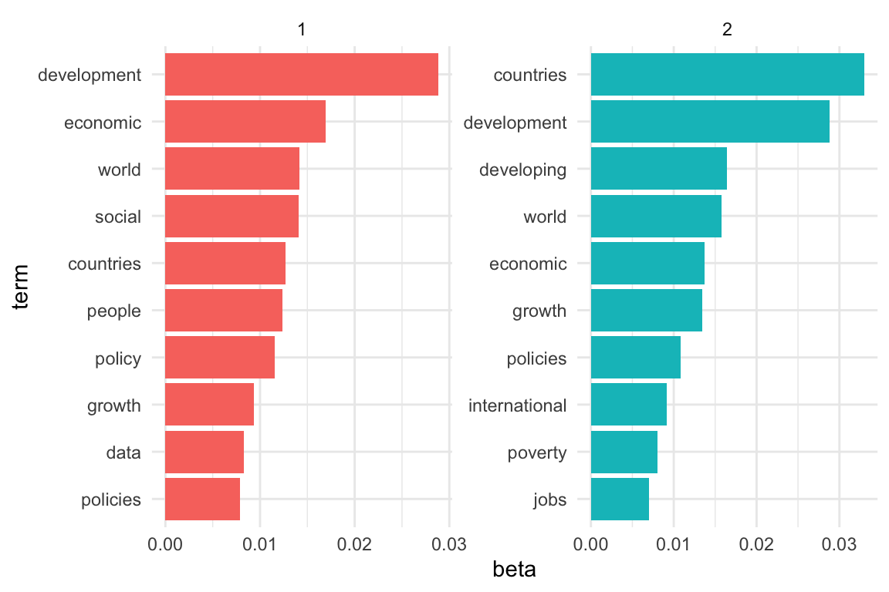
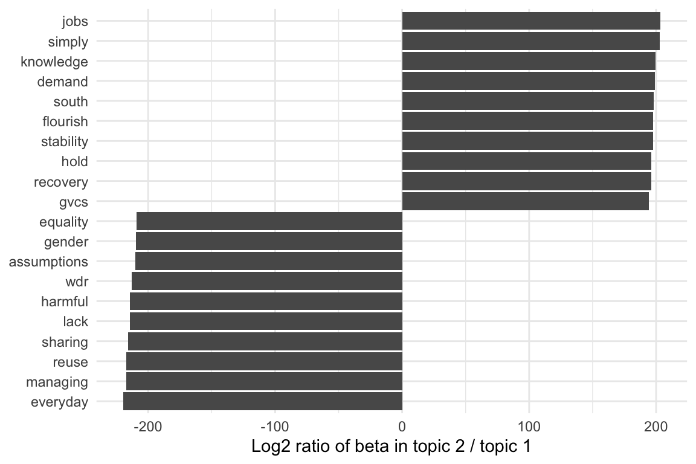

Process and merge data - WDR abstracts
Luisa M. Mimmi
Last run: 2022-10-13
Work in progress
## Loading required package: pacmanWorld Development Reports (WRDs)
- DATA https://datacatalog.worldbank.org/search/dataset/0037800
- INSTRUCTIONS https://documents.worldbank.org/en/publication/documents-reports/api
- Following: (Kaye 2019; Robinson 2017; Robinson and Silge 2022)
I) Pre-processing
I.ii) – Set stopwords [more…]
# --- alt stop words
# mystopwords <- tibble(word = c("eq", "co", "rc", "ac", "ak", "bn",
# "fig", "file", "cg", "cb", "cm",
# "ab", "_k", "_k_", "_x"))
# --- set up stop words
stop_words <- as_tibble(stop_words) %>% # in the tidytext dataset
add_row(word = "WDR", lexicon = NA_character_) %>%
# add_row(word = "world", lexicon = NA_character_) %>%
add_row(word = "report", lexicon = NA_character_) %>%
# add_row(word = "development", lexicon = NA_character_) %>%
add_row(word = "1978", lexicon = NA_character_) %>%
add_row(word = "1979", lexicon = NA_character_) %>%
add_row(word = "1980", lexicon = NA_character_) %>%
add_row(word = "1981", lexicon = NA_character_) %>%
add_row(word = "1982", lexicon = NA_character_) %>%
add_row(word = "1983", lexicon = NA_character_) %>%
add_row(word = "1984", lexicon = NA_character_) %>%
add_row(word = "1985", lexicon = NA_character_) %>%
add_row(word = "1986", lexicon = NA_character_) %>%
add_row(word = "1987", lexicon = NA_character_) %>%
add_row(word = "1988", lexicon = NA_character_) %>%
add_row(word = "1989", lexicon = NA_character_) %>%
add_row(word = "1990", lexicon = NA_character_) %>%
add_row(word = "1991", lexicon = NA_character_) %>%
add_row(word = "1992", lexicon = NA_character_) %>%
add_row(word = "1993", lexicon = NA_character_) %>%
add_row(word = "1994", lexicon = NA_character_) %>%
add_row(word = "1995", lexicon = NA_character_) %>%
add_row(word = "1996", lexicon = NA_character_) %>%
add_row(word = "1997", lexicon = NA_character_) %>%
add_row(word = "1998", lexicon = NA_character_) %>%
add_row(word = "1999", lexicon = NA_character_) %>%
add_row(word = "2000", lexicon = NA_character_) %>%
add_row(word = "2001", lexicon = NA_character_) %>%
add_row(word = "2002", lexicon = NA_character_) %>%
add_row(word = "2003", lexicon = NA_character_) %>%
add_row(word = "2004", lexicon = NA_character_) %>%
add_row(word = "2005", lexicon = NA_character_) %>%
add_row(word = "2006", lexicon = NA_character_) %>%
add_row(word = "2007", lexicon = NA_character_) %>%
add_row(word = "2008", lexicon = NA_character_) %>%
add_row(word = "2009", lexicon = NA_character_) %>%
add_row(word = "2010", lexicon = NA_character_) %>%
add_row(word = "2011", lexicon = NA_character_) %>%
add_row(word = "2012", lexicon = NA_character_) %>%
add_row(word = "2013", lexicon = NA_character_) %>%
add_row(word = "2014", lexicon = NA_character_) %>%
add_row(word = "2015", lexicon = NA_character_) %>%
add_row(word = "2016", lexicon = NA_character_) %>%
add_row(word = "2017", lexicon = NA_character_) %>%
add_row(word = "2018", lexicon = NA_character_) %>%
add_row(word = "2019", lexicon = NA_character_) %>%
add_row(word = "2020", lexicon = NA_character_) %>%
add_row(word = "2021", lexicon = NA_character_) %>%
add_row(word = "2022", lexicon = NA_character_) %>%
# filter (word != "changes") %>%
# filter (word != "value") %>%
filter (word != "member") %>%
filter (word != "part") %>%
filter (word != "possible") %>%
filter (word != "point") %>%
filter (word != "present") %>%
# filter (word != "zero") %>%
filter (word != "young") %>%
filter (word != "old") %>%
filter (word != "trying")
# --- set up stop words stemmed
stop_words_stem <- stop_words %>%
mutate (word = SnowballC::wordStem(word ))II) Data (ingestion), loading & cleaning
Ingestion of WDR basic metadata was done in
./_my_stuff/WDR-data-ingestion.Rmd and the result saved as
./data/raw_data/WDR.rds <– (Being somewhat computational
intensive, I only did it once.)
- WDR = tibble [45, 8]
- doc_mt_identifier_1 chr oai:openknowledge.worldbank.org:109~
- doc_mt_identifier_2 chr http://www-wds.worldbank.org/extern~
- doc_mt_title chr Development Economics through the ~
- doc_mt_date chr 2012-03-19T10:02:25Z 2012-03-19T19:~
- doc_mt_creator chr Yusuf, Shahid World Bank World Bank~
- doc_mt_subject chr ABSOLUTE POVERTY AGGLOMERATION BENE~
- doc_mt_description chr The World Development Report (WDR) ~
- doc_mt_set_spec chr oai:openknowledge.worldbank.org:109~
Ingestion of WDR lists of subjects was available
among metadata but presented issues (difficulty to extract, many records
with repetition,apparently wrong) so I reconstructed them manually in
data/raw_data/WDR_subjects_corrected2010_2011.xlsx taking
them from site https://elibrary.worldbank.org/ which lists
keywords correctly e.g. see
2022 WDR
# WRD metadata taken with API get (issues)
WDR <- readr::read_rds(here::here("data", "raw_data", "WDR.rds" )) %>%
# Extract only the portion of string AFTER the backslash {/}
mutate(id = as.numeric(stringr::str_extract(doc_mt_identifier_1, "[^/]+$"))) %>%
dplyr::relocate(id, .before = doc_mt_identifier_1) %>%
mutate(url_keys = paste0("https://openknowledge.worldbank.org/handle/10986/", id , "?show=full")) %>%
# eliminate NON WDR book
dplyr::filter(id != "2586")
# WRD subject/date_issued taken by manual review
WDR_subjects <- readxl::read_excel(here::here("data", "raw_data",
"WDR_subjects_corrected2010_2011.xlsx")) %>%
drop_na(id) %>%
# eliminate NON WDR book
dplyr::filter(id != "2586") ## New names:
## • `` -> `...6`
## • `` -> `...7`
## • `` -> `...8`# delete empty cols
ColNums_NotAllMissing <- function(df){ # helper function
as.vector(which(colSums(is.na(df)) != nrow(df)))
}
WDR_subjects <- WDR_subjects %>%
select(ColNums_NotAllMissing(.))
# # convert all columns that start with "subj_" to lowercase
# WDR_subjects[3:218] <- sapply(WDR_subjects[3:218], function(x) tolower(x))
# join
WDR_com <- left_join(WDR, WDR_subjects, by = "id") %>%
dplyr::relocate(date_issued, .before = id ) %>%
# drop useles clmns
dplyr::select(#-doc_mt_identifier_1,
-doc_mt_identifier_2, -doc_mt_date,
-doc_mt_subject, -doc_mt_creator, -doc_mt_set_spec) %>%
# dplyr::relocate(url_keys, .after = subj_216 ) %>%
dplyr::rename(abstract = doc_mt_description) %>%
# correct titles -> portion after {:}
dplyr::mutate(., title = str_extract(doc_mt_title,"[^:]+$")) %>%
dplyr::relocate(title, .after = id) %>%
dplyr::rename(title_miss = doc_mt_title) %>%
dplyr::mutate(title_miss = case_when(
str_starts(title, "World Development Report") ~ "Y",
TRUE ~ NA_character_)
) %>%
dplyr::mutate(subject_miss = if_else(is.na(subj_1),
"Y",
NA_character_)) %>%
dplyr::relocate(subject_miss, .after = title_miss) %>%
dplyr::relocate(ISBN, .after = id)
#paint(WDR_com)
# convert all columns that start with "subj_" to lowercase (maybe redundant)
WDR_com[, grep("^subj_", names(WDR_com))] <- sapply(WDR_com[, grep("^subj_", names(WDR_com))], function(x) tolower(x))
# combine all `subj_...` vars into a vector separated by comma
col_subj <- names(WDR_com[, grep("^subj_", names(WDR_com))] )
WDR_com <- WDR_com %>% tidyr::unite(
col = "all_subj",
subj_1:subj_46,
sep = ",",
remove = FALSE,
na.rm = TRUE) %>%
arrange(date_issued)
#paint(WDR_com)– Some manual correction of wrong metadata
# adding actual titles
#WDR_com[WDR_com$date_issued == "1978", c("date_issued", "id", "title")]
WDR_com$title[WDR_com$id == "5961"] <- "Prospects for Growth and Alleviation of Poverty"
#WDR_com[WDR_com$date_issued == "1979", c("date_issued", "id", "title")]
WDR_com$title[WDR_com$id == "5962"] <- "Structural Change and Development Policy"
#WDR_com[WDR_com$date_issued == "1980", c("date_issued", "id", "title")]
WDR_com$title[WDR_com$id == "5963"] <- "Poverty and Human Development"
#WDR_com[WDR_com$date_issued == "1981", c("date_issued", "id", "title")]
WDR_com$title[WDR_com$id == "5964"] <- "National and International Adjustment"
#WDR_com[WDR_com$date_issued == "1982", c("date_issued", "id", "title")]
WDR_com$title[WDR_com$id == "5965"] <- "Agriculture and Economic Development"
#WDR_com[WDR_com$date_issued == "1983", c("date_issued", "id", "title")]
WDR_com$title[WDR_com$id == "5966"] <- "Management in Development"
#WDR_com[WDR_com$date_issued == "1984", c("date_issued", "id", "title")]
WDR_com$title[WDR_com$id == "5967"] <- "Population Change and Development"
#WDR_com[WDR_com$date_issued == "1985", c("date_issued", "id", "title")]
WDR_com$title[WDR_com$id == "5968"] <- "International Capital and Economic Development"
#WDR_com[WDR_com$date_issued == "1986", c("date_issued", "id", "title")]
WDR_com$title[WDR_com$id == "5969"] <- "Trade and Pricing Policies in World Agriculture"
#WDR_com[WDR_com$date_issued == "1987", c("date_issued", "id", "title")]
WDR_com$title[WDR_com$id == "5970"] <- "Industrialization and Foreign Trade"
#WDR_com[WDR_com$date_issued == "1988", c("date_issued", "id", "title")]
WDR_com$title[WDR_com$id == "5971"] <- "Public Finance in Development"
# wrong year
#WDR_com[WDR_com$date_issued %in% c( "2011","2012","2013", "2014", "2015"), c("date_issued", "id", "title")]
WDR_com$date_issued[WDR_com$id == "11843"] <- "2013"
WDR_com$date_issued[WDR_com$id == "16092"] <- "2014"II.i) Troubleshooting some documents
PROBLEM: some of the subjects collections are evidently wrong (either they are the same of another WDR or the list is impossibly long)
MY SOLUTION #1: I took them manually from the website “elibrary” https://elibrary.worldbank.org/action/showPublications?SeriesKey=b02
But, there still is WDR 2011 (“Conflict, Security, and Development”) which misses keywords
MY SOLUTION #2: I take the abstract and I create my own “plausible list” of subjects
— Extrapolate subjects from abstracts - for record with missing subjects/keywords
(*) There will remain a problem: this corrected records have tokens and not bi|n-grams (which make more sense)!
# --- identify wrong subject obs
WDR_wr <- WDR_com %>%
filter( subject_miss == "Y")
# names(WDR_com)– WDR caseid = 4389
# --- tokenize abstract
WDR_4389 <- WDR_wr %>%
filter(id =="4389") %>%
select (abstract) %>% as_tibble() %>%
tidytext::unnest_tokens(word, abstract) # -> 251 words
# --- remove stop words
# --- isolate meaningful tokens
WDR_4389 <- WDR_4389 %>%
anti_join( stop_words , by = "word") %>% # -> 131 words
# Count observations by group
count(word, sort = T) # -> 101 words
# rename column in result corrected
WDR_4389_w <- t(WDR_4389) %>% as_tibble()
names(WDR_4389_w) <- gsub(x = names(WDR_4389_w), pattern = "\\V", replacement = "subj_")
# --- graph words
# p <- WDR_4389 %>% count(word, sort = TRUE) %>%
# filter(n > 600) %>%
# mutate(word = reorder(word, n)) %>%
# ggplot(aes(n, word)) +
# geom_col() +
# labs(y = NULL)
# p
#
# --- replace as subjects
WDR_4389_w <- WDR_4389_w %>%
filter(row_number() == 1 ) %>%
mutate(id = 4389) %>%
relocate(id, .before = subj_1)
# names(WDR_4389_w)
WDR_4389_w <- WDR_4389_w %>%
tidyr::unite(
col = "all_subj",
subj_1:subj_100,
sep = ",",
remove = FALSE)
#names(WDR_com)
WDR_com_2 <- WDR_com %>%
relocate(subj_1 ,.after = all_subj)
# # create a vector of column names to add to reach the n length(WDR_com)
# col_names <- as.vector(paste0('subj_', length(WDR_4389_w):105))
#
# # make a df with those cols and 1 row made of Nas values
# to_add <- bind_rows(setNames(rep("", length(col_names)), col_names))[NA_character_, ]
#
# # --- pad until subj_216 with nas.........
# WDR_4389_w_pad <- bind_cols(WDR_4389_w, to_add)
#### -- NOW: replace corrected single WDR case into master df
# # initial check ---
# WDR_com$subj_1[WDR_com$id == 4389]
# WDR_com$subj_3[WDR_com$id == 4389]
# #---
#id <- 4389
col_subj_names <- names(WDR_4389_w)[-(1)] # without "id" "all_subj"
# pick the id
i <- 4389
# # --- function --- NO JOY!
# for (j in 1:length(col_subj_names)) {
# col <- col_subj_names[j]
# # print(col) # nolint
# WDR_com %>%
# dplyr::filter (id == i) %>%
# dplyr::mutate (., col = WDR_4389_w_pad$col)
# WDR_com_2 <- WDR_com
# }
# ---------# Solution from SO guy
# r is vectorized so
WDR_com_2[WDR_com_2$id %in% WDR_4389_w$id, 9:55] <- WDR_4389_w[, 2:48] * I cut some …so this record WDR_4389 will be incomplete
II.ii) – SAVE wdr and cleanenv
wdr <- WDR_com_2 %>%
select(-title_miss) %>%
mutate(decade = case_when(
str_detect (string = date_issued, pattern = "^197") ~ "1970s",
str_detect (string = date_issued, pattern = "^198") ~ "1980s",
str_detect (string = date_issued, pattern = "^199") ~ "1990s",
str_detect (string = date_issued, pattern = "^200") ~ "2000s",
str_detect (string = date_issued, pattern = "^201") ~ "2010s",
str_detect (string = date_issued, pattern = "^202") ~ "2020s"
)) %>%
relocate(decade, .after = date_issued) %>%
# correct some datatype
mutate_at(vars(date_issued, altmetric), as.numeric)
dataDir <- fs::path_abs(here::here("data","derived_data"))
fileName <- "/wdr.rds"
Dir_File <- paste0(dataDir, fileName)
write_rds(x = wdr, file = Dir_File)
# # ls objects
# list_old_WDR <- ls(# pattern = "^WDR",
# all.names = TRUE)
# list_old_WDR
# rm(list = setdiff(list_old_WDR, c("stop_words", "stop_words_stem")))wdr <- readr::read_rds(here::here("data", "derived_data", "wdr.rds" ))I.iii) > > Part of Speech Tagging
Tagging segments of speech for part-of-speech (nouns, verbs, adjectives, etc.) or entity recognition (person, place, company, etc.) https://m-clark.github.io/text-analysis-with-R/part-of-speech-tagging.html
– tagging with cleanNLP
AH: https://datavizs22.classes.andrewheiss.com/example/13-example/#sentiment-analysis
Here’s the general process for tagging (or “annotating”) text with the cleanNLP package:
- Make a dataset where one column is the id (line number, chapter number, book+chapter, etc.), and another column is the text itself.
- Initialize the NLP tagger. You can use any of these:
cnlp_init_udpipe(): Use an R-only tagger that should work without installing anything extra (a little slower than the others, but requires no extra steps!)cnlp_init_spacy(): Use spaCy (if you’ve installed it on your computer with Python)cnlp_init_corenlp(): Use Stanford’s NLP library (if you’ve installed it on your computer with Java)
- Feed the data frame from step 1 into the cnlp_annotate() function and wait.
- Save the tagged data on your computer so you don’t have to re-tag it every time.
III) ABSTRACTS
All the following tasks were performend on the abstracts of WDRs. Why?
+ becasue I needed to learn
+ becasue abstracts tend to include the ***keywords***III.i) Tokenization
Where a word is more abstract, a “type” is a concrete term used in actual language, and a “token” is the particular instance we’re interested in (e.g. abstract things (‘wizards’) and individual instances of the thing (‘Harry Potter.’). Breaking a piece of text into words is thus called “tokenization”, and it can be done in many ways.
— The choices of tokenization
- Should words be lowercased? x
- Should punctuation be removed? x
- Should numbers be replaced by some placeholder?
- Should words be stemmed (also called lemmatization). x
- Should bigrams/multi-word phrase be used instead of single word phrases?
- Should stopwords (the most common words) be removed? x
- Should rare words be removed?
— Tokenization using regular expression syntax
The R function strsplit lets us do just this: split a
string into pieces. *Note, for example, that this makes the word “Don’t”
into two words.
tok_simple <- as_tibble(wdr$abstract[1] ) %>%
str_split("[^A-Za-z]") # “split on anything that isn’t a letter between A and Z.”
str(tok_simple) # list of characters ## List of 1
## $ : chr [1:92] "This" "first" "report" "deals" ...#tok_simple[[1]]— Tokenization using tidytext
The simplest way is to remove anything that isn’t a letter. The
workhorse function in tidytext is
unnest_tokens. It creates a new columns (here called
‘words’) from each of the individual ones in text.
abs_1 <- as_tibble(wdr$abstract[1] )
# LIST OF features I can add to `unnest_tokens`
tok_feat_l <- list(
# 1) all 2 lowercase
abs_1 %>% unnest_tokens(word, value) %>% select(lowercase = word),
# 4) `SnowballC::wordStem` extracts stems of each given words in the vector.
abs_1 %>% unnest_tokens(word, value) %>% rowwise() %>%
mutate(word = SnowballC::wordStem(word)) %>% select(stemmed = word),
# 1.b) keep uppercase if there are
abs_1 %>% unnest_tokens(word, value, to_lower = F) %>%
select(uppercase = word),
# 2) keep punctuation {default is rid}
abs_1 %>% unnest_tokens(word, value, to_lower = F, strip_punc = FALSE) %>%
select(punctuations = word),
# 5) bigram
abs_1 %>%
unnest_tokens(word, value, token = "ngrams", n = 2, to_lower = F) %>%
select(bigrams = word)
)
# Return a data frame created by column-binding.
tok_feat_df <- map_dfc(tok_feat_l , ~ .x %>% head(10))
tok_feat_df## # A tibble: 10 × 5
## lowercase stemmed uppercase punctuations bigrams
## <chr> <chr> <chr> <chr> <chr>
## 1 this thi This This This first
## 2 first first first first first report
## 3 report report report report report deals
## 4 deals deal deals deals deals with
## 5 with with with with with some
## 6 some some some some some of
## 7 of of of of of the
## 8 the the the the the major
## 9 major major major major major development
## 10 development develop development development development issues# # my choice
# abs_1_t_mod <- abs_1 %>%
# # no punctuation, yes capitalized
# unnest_tokens(word, value, to_lower = F, strip_punc = TRUE) %>% # 249 obs
# # exclude stopwords
# anti_join(stop_words) # 109 obs
#
# head(abs_1_t_mod, 15)— Tokenizing ALL abstracts
# isolate only abstracts
abs_all <- wdr %>%
dplyr::select(id, date_issued, title, abstract)
abs_all_token <- abs_all %>%
unnest_tokens(output = word,
input = abstract ,
to_lower = T, # otherwise cannot match the stop_words
strip_punc = TRUE
) %>% #10018
anti_join(stop_words) # 4613## Joining, by = "word"# Count words
wordcounts <- abs_all_token %>%
group_by(word) %>%
summarize(n = n()) %>%
#arrange(-n) %>%
# head(5) %>%
mutate(rank = rank(-n)) %>%
filter(n > 2, word != "")III.ii) Word and document frequency: TF-IDF
The goal is to quantify what a document is about. What is the document about?
- term frequency (tf) = how frequently a word occurs in a document… but there are words that occur many time and are not important
- term’s inverse document frequency (idf) = decreases the weight for commonly used words and increases the weight for words that are not used very much in a collection of documents.
- statistic tf-idf (= tf-idf) = an alternative to using stopwords is the frequency of a term adjusted for how rarely it is used. [It measures how important a word is to a document in a collection (or corpus) of documents, but it is still a rule-of-thumb or heuristic quantity]
The tf-idf is the product of the term frequency and the inverse document frequency::
\[ \begin{aligned} tf(\text{term}) &= \frac{n_{\text{term}}}{n_{\text{terms in document}}} \\ idf(\text{term}) &= \ln{\left(\frac{n_{\text{documents}}}{n_{\text{documents containing term}}}\right)} \\ tf\text{-}idf(\text{term}) &= tf(\text{term}) \times idf(\text{term}) \end{aligned} \]
— Pre-process 4 TF-IDF
# PREP X TF-IDF
#paint(abs_all)
skimr::n_unique(abs_all$title)## [1] 44skimr::n_unique(abs_all$date_issued)## [1] 44# Count words (with stopwords)
temp <- abs_all %>%
unnest_tokens(output = word,
input = abstract,
to_lower = T, # otherwise cannot match the stop_words
strip_punc = TRUE) %>% #9769 = tot words
# mutate(word = SnowballC::wordStem(word)) %>%
## other important pre-process step
# mutate(title = factor(title, ordered = TRUE)) %>%
# mutate(date_issued = factor(date_issued, ordered = TRUE)) %>%
## implicit group by ...
group_by(date_issued) %>%
# Count observations by group
count(word, sort = TRUE) %>% # 5860 # unique words
ungroup()
abs_words <- left_join(temp, abs_all, by = "date_issued")
paint(abs_words)## tibble [5860, 6]
## date_issued dbl 2014 2014 1999 1982 1993 1993
## word chr and the the the the and
## n int 32 27 26 25 25 23
## id dbl 16092 16092 5982 5965 5976 5976
## title chr Risk and Opportunity—Managing Risk for Dev~
## abstract chr The past 25 years have witnessed unpreceden~modo I) {Kumaran Ponnambalam} Create a Word Frequency
Table
# abs_words_freq <- abs_words %>%
# anti_join(stop_words, by= "word" ) %>%
# tidyr::pivot_wider(names_from = word, values_from = n, values_fill = 0)
#
# # skim(abs_words_freq)
#
# #Generate the Document Term matrix
# abs_words_freq_matrix <- as.matrix(abs_words_freq)
#
# abs_words_freq_matrix[ , 'gender']
#
# # .... uses {tm}
#str(abs_words_freq_matrix)modo II) {Julia Silge and David Robinson} tidytext::bind_tf_idf
The idea of tf-idf is to find the important words for
the content of each document by decreasing the weight for commonly
used words and increasing the weight for words that are not used very
much in a collection or corpus of documents. Calculating tf-idf
attempts to find the words that are important (i.e., common) in a text,
but not too common. Let’s do that now.
### --- abstracts with totals
# Calculate the total appearances of each words per doc
abs_total_words <- abs_words %>%
dplyr::group_by(title) %>%
dplyr::summarise(total = sum(n))
# Join the total appearances of each words per doc
abs_words_T <- left_join(abs_words, abs_total_words) %>%
select(id, date_issued, title, abstract, word, n, total )## Joining, by = "title"# The usual suspects are here, “the”, “and”, “to”, and so forth.
# ggplot(abs_words_T, aes(n/total, fill = title)) +
# geom_histogram(show.legend = FALSE) +
# xlim(NA, 0.01) +
# facet_wrap(~title, ncol = 2, scales = "free_y")
tidytext::bind_tf_idf: Calculate and bind the term frequency and inverse document frequency of a tidy text dataset, along with the product, tf-idf, to the dataset. Each of these values are added as columns. This function supports non-standard evaluation through the tidyeval framework.
abs_words_tf_idf <- abs_words_T %>%
#bind_tf_idf(tbl, term, document, n)
bind_tf_idf( word, title, n) %>% # 5860
# get rid of stopwords anyway &...
anti_join(stop_words, by = "word") %>% # 3703
# fileter most importantly weighted
# filter(tf_idf > 0.01 ) %>% # 2278
arrange(date_issued, desc(tf_idf))
abs_words_tf_idf## # A tibble: 3,768 × 10
## id date_issued title abstr…¹ word n total tf idf tf_idf
## <dbl> <dbl> <chr> <chr> <chr> <int> <int> <dbl> <dbl> <dbl>
## 1 5961 1978 Prospects fo… This f… alle… 1 88 0.0114 3.78 0.0430
## 2 5961 1978 Prospects fo… This f… clar… 1 88 0.0114 3.78 0.0430
## 3 5961 1978 Prospects fo… This f… comp… 1 88 0.0114 3.78 0.0430
## 4 5961 1978 Prospects fo… This f… deals 1 88 0.0114 3.78 0.0430
## 5 5961 1978 Prospects fo… This f… inte… 1 88 0.0114 3.78 0.0430
## 6 5961 1978 Prospects fo… This f… link… 1 88 0.0114 3.78 0.0430
## 7 5961 1978 Prospects fo… This f… econ… 3 88 0.0341 1.22 0.0416
## 8 5961 1978 Prospects fo… This f… major 3 88 0.0341 1.22 0.0416
## 9 5961 1978 Prospects fo… This f… pros… 2 88 0.0227 1.59 0.0361
## 10 5961 1978 Prospects fo… This f… acce… 1 88 0.0114 3.09 0.0351
## # … with 3,758 more rows, and abbreviated variable name ¹abstractNotice that idf and thus tf-idf are zero
for these extremely common words. These are all words that appear in all
docs, so the idf term (which will then be the natural log
of 1) is zero.
The inverse document frequency (and thus
tf-idf) is very low (near zero) for words that occur in many of the documents in a collection; this is how this approach decreases the weight for common words. IDF will be a higher number for words that occur in fewer of the documents in the collection.
Let’s look at recurring terms terms with high tf-idf in WDRs.
# wdr[ wdr$id %in% c("4391" ) , c("date_issued", "title" )]
# let's look specifically at "Gender Equality and Development"
tf_idf_2012 <- abs_words_tf_idf %>%
filter(date_issued == "2012") %>%
select(-total) %>%
arrange(desc(tf_idf))
# These words are, as measured by tf-idf, the most important to "Gender Equality and Development" and most readers would likely agree.
tf_idf_2012[tf_idf_2012$word %in% c("gender", "equality", "development") ,]## # A tibble: 3 × 9
## id date_issued title abstr…¹ word n tf idf tf_idf
## <dbl> <dbl> <chr> <chr> <chr> <int> <dbl> <dbl> <dbl>
## 1 4391 2012 " Gender Equality a… "The m… gend… 13 0.0588 3.09 0.182
## 2 4391 2012 " Gender Equality a… "The m… equa… 6 0.0271 3.78 0.103
## 3 4391 2012 " Gender Equality a… "The m… deve… 10 0.0452 0 0
## # … with abbreviated variable name ¹abstract# # A tibble: 3 × 7
# date_issued title word n tf idf tf_idf
# <chr> <chr> <chr> <int> <dbl> <dbl> <dbl>
# 1 2012 " Gender Equality and Development" gender 13 0.0588 3.09 0.182
# 2 2012 " Gender Equality and Development" equality 6 0.0271 3.78 0.103
# 3 2012 " Gender Equality and Development" development 10 0.0452 0 0 — TF-IDF tables/ viz for selected WDRs
Interestingly, some themes are recurrent in cycles (as per (Yusuf 2008)). So I wanted to check TF_IDF in these “subsets” of WDRs
Poverty
# wdr[ wdr$id %in% c("5961", "5963", "5973", "11856" ) , c("date_issued", "title" )]
# SIMPLE TABLE WITH FILTER
tf_idf_poverty <- abs_words_tf_idf %>%
dplyr::filter(date_issued %in% c("1978", "1980", "1990", "2001")) %>%
dplyr::filter(n > 1) %>%
select(-id, -abstract) %>%
dplyr::arrange(date_issued, desc(tf_idf)) What this TF-IDF measure shows is the specific words that distinguish each WDR in this subset themed on poverty: i.e. the point of tf-idf is to identify words that are important to one document within a collection of documents.
…viz
library(forcats) # Tools for Working with Categorical Variables (Factors)
gg_pov_tfidf <- tf_idf_poverty %>%
mutate (title2 = paste( "WDR of ", date_issued )) %>%
group_by(title2) %>%
slice_max(tf_idf, n = 50) %>%
ungroup() %>%
ggplot(aes(tf_idf, fct_reorder(word, tf_idf), fill = title2)) +
geom_col(show.legend = FALSE) +
#my_theme() +
scale_fill_manual(values = mycolors_contrast) + # my palette
# labs(x = "tf-idf for ", y = NULL) +
labs(title= bquote("TF-IDF ranking in 4 WDRs focused on "~bold("poverty topic")),
subtitle="(overall 50 tokens with highest TF-IDF)",
#caption="Source: ????",
x="TF-IDF values",
y=""
) +
facet_wrap(~title2, ncol = 2, scales = "free")
gg_pov_tfidf 
gg_pov_tfidf %T>%
ggsave(., filename = here("analysis", "output", "figures", "gg_pov_tfidf.pdf"),
# width = 2.75, height = 1.5, units = "in", device = cairo_pdf
) %>%
ggsave(., filename = here("analysis", "output", "figures", "gg_pov_tfidf.png"),
#width = 2.75, height = 1.5, units = "in", type = "cairo", dpi = 300
)## Saving 6 x 4 in image
## Saving 6 x 4 in imageEnvironment/Climate
#wdr[ wdr$id %in% c("5975", "4387" ) , c("date_issued", "title" )]
# SIMPLE TABLE WITH FILTER
tf_idf_env <- abs_words_tf_idf %>%
dplyr::filter(date_issued %in% c("1992", "2010")) %>%
dplyr::filter(n > 1) %>%
select(-id, -abstract) %>%
dplyr::arrange(date_issued, desc(tf_idf)) …viz
Evident how in the 2010 WDR, words like “warming” and “temperatures” appear, while they were unimportant in the 1992 flagship report.
gg_env_tfidf <- tf_idf_env %>%
mutate (title2 = paste( "WDR of ", date_issued )) %>%
group_by(title2) %>%
slice_max(tf_idf, n = 50) %>%
ungroup() %>%
ggplot(aes(tf_idf, fct_reorder(word, tf_idf), fill = title2)) +
geom_col(show.legend = FALSE) +
#my_theme() +
scale_fill_manual(values = mycolors_contrast) + # my palette
# labs(x = "tf-idf for ", y = NULL) +
labs(title= bquote("TF-IDF ranking in 4 WDRs foucused on "~bold("environment/climate change")), #title="TF-IDF ranking in 4 WDRs dedicated to environment/climate change topic",
subtitle="(overall 50 tokens with highest TF-IDF)",
#caption="Source: ????",
x="TF-IDF values",
y=""
) +
facet_wrap(~title2, ncol = 2, scales = "free")
gg_env_tfidf 
gg_env_tfidf %T>%
ggsave(., filename = here("analysis", "output", "figures", "gg_env_tfidf.pdf"),
# width = 2.75, height = 1.5, units = "in", device = cairo_pdf
) %>%
ggsave(., filename = here("analysis", "output", "figures", "gg_env_tfidf.png"),
#width = 2.75, height = 1.5, units = "in", type = "cairo", dpi = 300
)## Saving 6 x 4 in image
## Saving 6 x 4 in imageKnowledge/data
# skim(abs_words_tf_idf$tf_idf)
# wdr[ wdr$id %in% c("5981", "35218" ) , c("date_issued", "title" )]
# SIMPLE TABLE WITH FILTER
tf_idf_knowl <- abs_words_tf_idf %>%
dplyr::filter(date_issued %in% c("1998", "2021")) %>%
dplyr::filter(n > 1) %>%
select(-id, -abstract) %>%
dplyr::arrange(date_issued, desc(tf_idf))…viz
gg_knowl_tfidf <- tf_idf_knowl %>%
dplyr::filter(date_issued %in% c("1998", "2021")) %>%
mutate (title2 = paste( "WDR of ", date_issued )) %>%
group_by(title2) %>%
slice_max(tf_idf, n = 50) %>%
ungroup() %>%
ggplot(aes(tf_idf, fct_reorder(word, tf_idf), fill = title2)) +
geom_col(show.legend = FALSE) +
#my_theme() +
scale_fill_manual(values = mycolors_contrast) + # my palette
# labs(x = "tf-idf for ", y = NULL) +
labs(title= bquote("TF-IDF ranking in 4 WDRs foucused on "~bold("knowledge/data")),
#title="TF-IDF ranking in 4 WDRs dedicated to knowledge/data change topic",
subtitle="(overall 50 tokens with highest TF-IDF)",
#caption="Source: ????",
x="TF-IDF values",
y=""
) +
facet_wrap(~title2, ncol = 2, scales = "free")
gg_knowl_tfidf 
gg_knowl_tfidf %T>%
ggsave(., filename = here("analysis", "output", "figures", "gg_knowl_tfidf.pdf"),
# width = 2.75, height = 1.5, units = "in", device = cairo_pdf
) %>%
ggsave(., filename = here("analysis", "output", "figures", "gg_knowl_tfidf.png"),
#width = 2.75, height = 1.5, units = "in", type = "cairo", dpi = 300
)## Saving 6 x 4 in image
## Saving 6 x 4 in imageIII.iii) Word frequency histogram {meaningless}
— SCHMIDT’s Plotting most frequent words (all abstractS) —————-
http://benschmidt.org/HDA/texts-as-data.html
The simple plot gives a very skewed curve: As always, you should experiment with multiple scales, and especially think about logarithms. Putting logarithmic scales on both axes reveals something interesting about the way that data is structured; this turns into a straight line.
“Zipf’s law:” the most common word is twice as common as the second most common word, three times as common as the third most common word, four times as common as the fourth most common word, and so forth.
# Putting logarithmic scales on both axes
ggplot(wordcounts) +
aes(x = rank, y = n, label = word) +
geom_point(alpha = .3, color = "grey") +
geom_text(check_overlap = TRUE) +
scale_x_continuous(trans = "log") +
scale_y_continuous(trans = "log") +
labs(title = "Zipf's Law",
subtitle="The log-frequency of a term is inversely correlated with the logarithm of its rank.")
# ...the logarithm of rank decreases linearly with the logarithm of count[the logarithm of rank decreases linearily with the logarithm of count.] –> common words are very common indeed, and logarithmic scales are more often appropriate for plotting than linear ones.
— SILGE’s Plotting most frequent words (all abstractS) —————-
- OKKIO n instead of n/total
# abs_words_T --> 5860
# let's eliminate stopwords
abs_words2 <- anti_join(x = abs_words_T, y = stop_words, by= "word" ) %>%
#filter(n > 1) %>%
select(date_issued, title, word, n, total)
abs_words2 #--> 3699## # A tibble: 3,768 × 5
## date_issued title word n total
## <dbl> <chr> <chr> <int> <int>
## 1 2021 " Data for Better Lives" data 17 314
## 2 2013 " Jobs" jobs 15 407
## 3 1993 " Investing in Health" health 14 378
## 4 1998 " Knowledge for Development" knowledge 14 194
## 5 2012 " Gender Equality and Development" gender 13 221
## 6 2012 " Gender Equality and Development" developm… 10 221
## 7 1999 " Entering the 21st Century" developm… 9 249
## 8 2005 " A Better Investment Climate for Everyone" investme… 9 286
## 9 2018 " Learning to Realize Education's Promise" learning 9 251
## 10 1992 " Development and the Environment" developm… 8 196
## # … with 3,758 more rows# paint(abs_words2)
# here there is one row for each word-WDR(abs) combination
# `n` is the number of times that word is used in that book and
# `total` is the total words in that abstractfrequency = let’s look at the distribution
of n/total for each doc, the number of times a word appears
in a doc divided by the total number of terms (words) in that doc
I actually use
ninstead because I have only small numbers having used the abstracts alone
one <- abs_words2 %>%
filter ( date_issued == "2021") %>%
mutate (freq = n/total)
ggplot(data = one,
mapping = aes(x = n, fill = title)) + # y axis not needed ... R will count
geom_histogram(binwidth = 1,
color = "white") +
scale_y_continuous(breaks= pretty_breaks()) +
xlim(0,10) +
labs(# title = title,
x = "frequency",
y = "N of words @ that frequency") +
guides( fill = "none")
# # skim(one$freq)
# ggplot(data = one,
# mapping = aes(x = freq, fill = title)) + # y axis not needed ... R will count
# geom_histogram(binwidth = 1,
# color = "white") +
# scale_y_continuous(breaks= pretty_breaks()) +
# xlim(0, 0.1) +
# labs(# title = title,
# x = "frequency",
# y = "N of words @ that frequency") +
# guides( fill = "none")# overlayed mess!
ggplot(abs_words2, aes(n, fill = title)) +
geom_histogram(binwidth = 1,
color = "white") +
scale_y_continuous(breaks= pretty_breaks()) +
xlim(0, 20) +
labs(#title = ~date_issued,
x = "frequency",
y = "N of words @ that frequency") +
guides( fill = "none")ggplot(abs_words2, aes(n, fill = title)) +
geom_histogram(binwidth = 1,
color = "white") +
scale_y_continuous(breaks= pretty_breaks()) +
xlim(0, 10) +
labs(#title = ~date_issued,
x = "frequency",
y = "N of words @ that frequency") +
facet_wrap( ~date_issued ) + # , ncol = 2, scales = "free_y")
guides( fill = "none") # way to turn legend off— Multiple plots of Word Freq with [purrr]
# ---- NON Capisco
# # Preferred approach
# histos <- abs_words2 %>%
# group_by(title) %>%
# nest() %>%
# mutate(plot = map2(data, title,
# ~ggplot(data = .x , aes(n/total, fill = title)) +
# geom_histogram( show.legend = FALSE) +
# xlim(NA, 0.05) +
# # ggtitle(.y) +
# ylab("Words Frequency") +
# xlab("Distribution per WDR title")))
#
# histos$plot[[1]]
# ---- Capisco
# https://stackoverflow.com/questions/60671725/ggplot-add-title-based-on-the-variable-in-the-dataframe-used-for-plotting
list_plot <- abs_words2 %>%
dplyr::group_split(date_issued) %>% # Split data frame by groups
map(~ggplot(.,
mapping = aes(x = n, fill = title)) +
geom_histogram(binwidth = 1,
color = "white") +
scale_y_continuous(breaks= pretty_breaks()) + # integer ticks {scales}
xlim(0, 18) + # max of freq is 17
labs(title = .$date_issued,
x = "frequency",
y = "N of words @ that frequency")
)
list_plot[[1]]
list_plot[[44]]
list_plot[[40]]
#grid.arrange(grobs = list_plot, ncol = 1)— Zipf’s law for WDR’s abstracts
Examine Zipf’s law for WDR’s abstracts with just a few lines of dplyr functions. > The rank column here tells us the rank of each word within the frequency table; the table was already ordered by n so we could use row_number() to find the rank
freq_by_rank <- abs_words2 %>%
arrange(desc(n)) %>% # order by n...
group_by(title) %>%
mutate(rank = row_number(), # so this can act as the rank
`term frequency` = n/total) %>% # term frequency
ungroup()
freq_by_rank## # A tibble: 3,768 × 7
## date_issued title word n total rank term …¹
## <dbl> <chr> <chr> <int> <int> <int> <dbl>
## 1 2021 " Data for Better Lives" data 17 314 1 0.0541
## 2 2013 " Jobs" jobs 15 407 1 0.0369
## 3 1993 " Investing in Health" heal… 14 378 1 0.0370
## 4 1998 " Knowledge for Development" know… 14 194 1 0.0722
## 5 2012 " Gender Equality and Developmen… gend… 13 221 1 0.0588
## 6 2012 " Gender Equality and Developmen… deve… 10 221 2 0.0452
## 7 1999 " Entering the 21st Century" deve… 9 249 1 0.0361
## 8 2005 " A Better Investment Climate fo… inve… 9 286 1 0.0315
## 9 2018 " Learning to Realize Education'… lear… 9 251 1 0.0359
## 10 1992 " Development and the Environmen… deve… 8 196 1 0.0408
## # … with 3,758 more rows, and abbreviated variable name ¹`term frequency`Zipf’s law is often visualized by plotting rank on the x-axis and term frequency on the y-axis, on logarithmic scales. Plotting this way, an inversely proportional relationship will have a constant, negative slope.
freq_by_rank %>%
filter (date_issued == "2021" | date_issued == "1998") %>%
ggplot(aes(rank, `term frequency`, color = title)) +
geom_line(size = 1.1, alpha = 0.8, show.legend = FALSE) +
scale_x_log10() +
scale_y_log10() +
labs(title = "Zipf’s law seen for knowledge (1998) & data (2021) WDRs",
subtitle = "(1998) = blue | (2021) = red",
x = "rank (log)",
y = "term frequency (log)",
color = "Legend") 
https://www.tidytextmining.com/tfidf.html#zipfs-law
perhaps we could view this as a broken power law with, say, three sections. Let’s see what the exponent of the power law is for the middle section of the rank range.
rank_subset <- freq_by_rank %>%
filter(rank < 500,
rank > 10)
lm(log10(`term frequency`) ~ log10(rank), data = rank_subset)##
## Call:
## lm(formula = log10(`term frequency`) ~ log10(rank), data = rank_subset)
##
## Coefficients:
## (Intercept) log10(rank)
## -1.8098 -0.3315Let’s plot this fitted power law with the obtaied data to see how it looks
freq_by_rank %>%
filter (date_issued == "2021" | date_issued == "1998") %>%
ggplot(aes(rank, `term frequency`, color = title)) +
geom_abline(intercept = -1.80, slope = -0.33,
color = "gray50", linetype = 2) +
geom_line(size = 1.1, alpha = 0.8, show.legend = FALSE) +
scale_x_log10() +
scale_y_log10()
The deviations we see here at high rank are not uncommon for many kinds of language; a corpus of language often contains fewer rare words than predicted by a single power law.
III.iv) Relationships between words: n-grams and correlations
https://www.tidytextmining.com/ngrams.html https://bookdown.org/Maxine/tidy-text-mining/tokenizing-by-n-gram.html
The one-token-per-row framework can be extended from single words to n-grams and other meaningful units of text(e.g. to see which words tend to follow others immediately, or that tend to co-occur within the same documents.)
tidytext::token = "ngrams" argumentis a method tidytext offers for calculating and visualizing relationships between words in your text dataset. It tokenizes by pairs of adjacent words rather than by individual ones.ggraphextendsggplot2to construct network plots,widyrcalculates pairwise correlations and distances within a tidy data frame.
— Tokenizing by n-gram
The unnest_tokens function can also be used to tokenize
into consecutive sequences of words, called n-grams. By seeing
how often word X is followed by word Y, we can then build a model of the
relationships between them.
# break the text [e.g. 1 abstract] into bi-gram
abs_2022_bigrams <- wdr %>%
dplyr::filter(id == 36883) %>%
select(abstract) %>%
as_tibble() %>%
unnest_tokens(., output = bigram, input = abstract, token = "ngrams", n=2 )
# notice how these bigrams overlap
head(abs_2022_bigrams)## # A tibble: 6 × 1
## bigram
## <chr>
## 1 world development
## 2 development report
## 3 report 2022
## 4 2022 finance
## 5 finance for
## 6 for an# # my choice
# abs_1_t_mod <- abs_1 %>%
# # no punctuation, yes capitalized
# unnest_tokens(word, value, to_lower = F, strip_punc = TRUE) %>% # 249 obs
# # exclude stopwords
# anti_join(stop_words) # 109 obs
abs_all_bigram <- abs_all %>%
unnest_tokens(., output = bigram, input = abstract, token = "ngrams", n=2 )
head(abs_all_bigram[c("date_issued","bigram")], 10)## # A tibble: 10 × 2
## date_issued bigram
## <dbl> <chr>
## 1 1978 this first
## 2 1978 first report
## 3 1978 report deals
## 4 1978 deals with
## 5 1978 with some
## 6 1978 some of
## 7 1978 of the
## 8 1978 the major
## 9 1978 major development
## 10 1978 development issuesThis data structure is still a variation of the tidy text format. It is structured as one-token-per-row but each token now represents a bigram.
— Operations on n-grams: counting and filtering
bigrams_counts <- abs_all_bigram %>%
count(bigram, sort = TRUE)
head(bigrams_counts)## # A tibble: 6 × 2
## bigram n
## <chr> <int>
## 1 in the 62
## 2 of the 54
## 3 the report 49
## 4 developing countries 46
## 5 the world 41
## 6 world development 40Not surprisingly, a lot are pairs of stopwords
Here, I can use tidyr::separate(), which splits a column
into multiple based on a delimiter. This separate it into two columns,
“word1” and “word2”, to then remove cases where either is a
stop-word.
In other analyses, we may want to work with the recombined words.
tidyr’s unite() function is the inverse of
separate(), and lets us recombine the columns into one.
# separate words
bigrams_separated <- abs_all_bigram %>%
tidyr::separate(bigram, c("word1", "word2"), sep = " ")
# since many are bigram with a stopword
bigrams_filtered <- bigrams_separated %>%
# remove cases where either is a stop-word
filter(!word1 %in% stop_words$word) %>%
filter(!word2 %in% stop_words$word)
# OPPOSITE: reunite words
bigrams_united <- bigrams_filtered %>%
unite(bigram, word1, word2, sep = " ")— (Trigrams)
In other analyses you may be interested in the most common trigrams, which are consecutive sequences of 3 words. We can find this by setting n = 3:
trigram <- abs_all %>%
unnest_tokens(trigram, abstract, token = "ngrams", n = 3) %>%
separate(trigram, c("word1", "word2", "word3"), sep = " ") %>%
filter(!word1 %in% stop_words$word,
!word2 %in% stop_words$word,
!word3 %in% stop_words$word) %>%
count(word1, word2, word3, sort = TRUE)— Bigram ~ potential meaningful SLOGANs?
Which of this bigram might be a SLOGAN candidate?
# new bigram counts:
bigrams_counts_clean <- bigrams_filtered %>%
# Count observations by group
count(word1, word2, sort = TRUE)
head(bigrams_counts_clean, 20) # cleaned up stopwords## # A tibble: 20 × 3
## word1 word2 n
## <chr> <chr> <int>
## 1 developing countries 46
## 2 world development 40
## 3 economic growth 16
## 4 annual series 14
## 5 development issues 12
## 6 development indicators 11
## 7 income countries 10
## 8 series assessing 10
## 9 economic development 9
## 10 poor people 9
## 11 climate change 8
## 12 major development 8
## 13 middle income 8
## 14 world economy 8
## 15 industrial countries 7
## 16 assessing major 6
## 17 gender equality 6
## 18 poverty reduction 6
## 19 risk management 6
## 20 billion people 5…Maybe some of these bigram with high tf-idf
- external finance
- gender equality
- development impact
- digital revolution
- investment climate
- accelerating growth
- alleviating poverty
- …
— Analyzing bigrams
This one-bigram-per-row format is helpful for exploratory analyses of the text. Let’s see what comes before “poverty”, “change”, “knowledge”…
bigrams_filtered %>%
filter(word2 == "poverty") %>%
count(date_issued, word1, sort = TRUE)## # A tibble: 15 × 3
## date_issued word1 n
## <dbl> <chr> <int>
## 1 1978 alleviating 1
## 2 1979 absolute 1
## 3 1980 absolute 1
## 4 1990 defines 1
## 5 1990 eliminating 1
## 6 2001 fight 1
## 7 2002 reducing 1
## 8 2003 reducing 1
## 9 2008 rural 1
## 10 2010 extreme 1
## 11 2013 development 1
## 12 2014 escaping 1
## 13 2015 addressing 1
## 14 2018 eradicating 1
## 15 2020 reduce 1bigrams_filtered %>%
filter(word2 == "change") %>%
count(date_issued, word1, sort = TRUE)## # A tibble: 13 × 3
## date_issued word1 n
## <dbl> <chr> <int>
## 1 2010 climate 5
## 2 1999 climate 1
## 3 2001 forge 1
## 4 2001 technological 1
## 5 2002 institutional 1
## 6 2008 climate 1
## 7 2014 reject 1
## 8 2015 climate 1
## 9 2015 rapid 1
## 10 2017 positive 1
## 11 2018 economic 1
## 12 2018 interventions 1
## 13 2020 technological 1bigrams_filtered %>%
filter(word2 == "knowledge") %>%
count(date_issued, word1, sort = TRUE)## # A tibble: 7 × 3
## date_issued word1 n
## <dbl> <chr> <int>
## 1 1998 absorbing 1
## 2 1998 acquiring 1
## 3 1998 communicating 1
## 4 1998 incomplete 1
## 5 1998 knowledge 1
## 6 1998 narrow 1
## 7 1998 technical 1…or after “human”, “finance”, “bottom”:
# after
bigrams_filtered %>%
filter(word1 == "human") %>%
count(date_issued, word2, sort = TRUE)## # A tibble: 11 × 3
## date_issued word2 n
## <dbl> <chr> <int>
## 1 2001 deprivation 2
## 2 1980 development 1
## 3 1981 development 1
## 4 1992 development 1
## 5 1993 health 1
## 6 1996 skills 1
## 7 2002 capabilities 1
## 8 2004 development 1
## 9 2012 capital 1
## 10 2018 welfare 1
## 11 2019 capital 1bigrams_filtered %>%
filter(word1 == "finance") %>%
count(date_issued, word2, sort = TRUE)## # A tibble: 3 × 3
## date_issued word2 n
## <dbl> <chr> <int>
## 1 1985 productively 1
## 2 1988 policies 1
## 3 2015 productivity 1bigrams_filtered %>%
filter(word1 == "bottom") %>%
count(date_issued, word2, sort = TRUE)## # A tibble: 1 × 3
## date_issued word2 n
## <dbl> <chr> <int>
## 1 2009 billion 1— Analyzing bigrams: tf-idf
There are advantages and disadvantages to examining the tf-idf of bigrams rather than individual words. Pairs of consecutive words might capture structure that isn’t present when one is just counting single words, and may provide context that makes tokens more understandable. However, the per-bigram counts are also sparser (a typical two-word pair is rarer than either of its component words).
bigram_tf_idf <- abs_all_bigram %>%
# reconstruct the separated + filtered + united
separate(bigram, c("word1", "word2"), sep = " ") %>%
filter(!word1 %in% stop_words$word) %>%
filter(!word2 %in% stop_words$word) %>%
# Put the two word columns back together
unite(bigram, word1, word2, sep = " ") %>%
# then on that calculate tf-idf
count(date_issued, bigram) %>%
bind_tf_idf(bigram, date_issued, n) %>%
arrange(desc(tf_idf))
head(bigram_tf_idf)## # A tibble: 6 × 6
## date_issued bigram n tf idf tf_idf
## <dbl> <chr> <int> <dbl> <dbl> <dbl>
## 1 2016 analog complements 2 0.222 3.78 0.841
## 2 1985 external finance 3 0.130 3.78 0.494
## 3 1984 population growth 2 0.154 3.09 0.476
## 4 2012 gender equality 6 0.113 3.78 0.428
## 5 2016 development impact 1 0.111 3.78 0.420
## 6 2016 digital investments 1 0.111 3.78 0.420— (Using bigrams to provide context in sentiment analysis)
…
— Visualizing a network of bigrams with ggraph
The igraph package has many powerful functions for
manipulating and analyzing networks.
One way to create an igraph object from tidy data is the
igraph::graph_from_data_frame() function, which takes a
data frame of edges with columns for “from”, “to”, and edge attributes
(in this case “n”):
If vertices is NULL, then the first two columns of df (e.g. word1 = FROM & word2 = TO) are used as a symbolic edge list and additional columns (e.g. n) as edge attributes/weight. The names of the attributes are taken from the names of the columns.
Here, a graph can be constructed from the tidy object
bigrams_counts_clean since it has three variables.
library(igraph) # Network Analysis and Visualization
bigrams_counts_clean## # A tibble: 1,593 × 3
## word1 word2 n
## <chr> <chr> <int>
## 1 developing countries 46
## 2 world development 40
## 3 economic growth 16
## 4 annual series 14
## 5 development issues 12
## 6 development indicators 11
## 7 income countries 10
## 8 series assessing 10
## 9 economic development 9
## 10 poor people 9
## # … with 1,583 more rows# filter for only relatively common combinations
bigram_graph <- bigrams_counts_clean %>%
filter(n > 2) %>%
# create an igraph graph from data frames containing the (symbolic) edge list and edge/vertex attributes.
igraph::graph_from_data_frame()Then we can convert an igraph object into a ggraph with
the ggraph function (extension of ggplot2),
after which we can add layers to it, much like layers are added in
ggplot2. For example, for a basic graph we need to add
three layers: “nodes”, “edges”, and “text”.
#convert an igraph object into a ggraph with the ggraph function
library(ggraph) # An Implementation of Grammar of Graphics for Graphs and Networks
set.seed(2022)
ggraph(bigram_graph, layout = "fr") +
# needed basic arguments passed
geom_edge_link() +
geom_node_point() +
geom_node_text(aes(label = name), vjust = 1, hjust = 1)
I can already see some common center nodes
We conclude with a few polishing operations to make a better looking graph (Figure 4.5):
- We add the
edge_alphaaesthetic to the link layer to make links transparent based on how common or rare the bigram is (= n) - We add directionality with an arrow, constructed using
grid::arrow(), including anend_capoption that tells the arrow to end before touching the node - We tinker with the options to the node layer to make the nodes more attractive (larger, blue points)
- We add a theme that’s useful for plotting networks,
theme_void()
set.seed(2022)
a <- grid::arrow(type = "closed", length = unit(.08, "inches"))
abs_bigram_graph <- ggraph(bigram_graph, layout = "fr") +
# LINK layer
geom_edge_link(aes(edge_alpha = n), # transparency of link based on n
show.legend = FALSE,
# direction
arrow = a,
# arrow to end before touch node
end_cap = circle(.08, 'inches')) +
# NODE layer
geom_node_point(color = "lightblue", size = 3) +
geom_node_text(aes(label = name),
vjust = 1, hjust = 1,
check_overlap = TRUE,
repel = FALSE # adds more lines
) +
# THEME
theme_void() +
ggtitle("Word Network in WDR's abstracts")
abs_bigram_graph
abs_bigram_graph %T>%
print() %T>%
ggsave(., filename = here("analysis", "output", "figures", "abs_bigram_graph.pdf"),
#width = 4, height = 2.25, units = "in",
device = cairo_pdf) %>%
ggsave(., filename = here("analysis", "output", "figures", "abs_bigram_graph.png"),
#width = 4, height = 2.25, units = "in",
type = "cairo", dpi = 300) ## Saving 6 x 4 in image
## Saving 6 x 4 in image
— Counting and correlating among sections
Notes for “Text Mining with R: A Tidy Approach”
The widyr package makes operations such as computing
counts and correlations easy, by simplifying the pattern of “widen
data -> perform an operation -> then re-tidy data”. We’ll
focus on a set of functions that make pairwise comparisons between
groups of observations (for example, between documents, or sections of
text).
# divide abstracts into 5-line sections
abs_section_words <- abs_all %>%
mutate(text = stringi::stri_split_lines(abstract, omit_empty = FALSE)
) %>%
#filter(date_issued == "1978") %>%
mutate(section = row_number(.$abstract) %/% 5) %>%
filter(section > 0) %>%
unnest_tokens(output = word,
input = abstract) %>%
filter(!word %in% stop_words$word)widyr::pairwise_counts() counts the number of times each
pair of items (words) appear together within a group defined by
“feature” (section). > note it still returns a tidy data
frame, although the underlying computation took place in a matrix form
:
abs_section_words %>%
widyr::pairwise_count(item = word, feature = section, sort = TRUE) %>%
# Since pairwise_count records both the counts of (word_A, word_B) and
#(word_B, word_B), it does not matter we filter at item1 or item2
filter(item1 == "developing")## # A tibble: 1,588 × 3
## item1 item2 n
## <chr> <chr> <dbl>
## 1 developing development 8
## 2 developing countries 8
## 3 developing international 8
## 4 developing world 8
## 5 developing growth 8
## 6 developing policy 8
## 7 developing income 8
## 8 developing policies 8
## 9 developing economic 8
## 10 developing social 8
## # … with 1,578 more rows— Pairwise correlation
We may want to examine correlation among words, which indicates how often they appear together relative to how often they appear separately.
we compute the \(\phi\) coefficient. Introduced by Karl Pearson, this measure is similar to the Pearson correlation coefficient in its interpretation. In fact, a Pearson correlation coefficient estimated for two binary variables will return the \(\phi\) coefficient. The phi coefficient is related to the chi-squared statistic for a 2 × 2 contingency table
\[ \phi = \sqrt{\frac{\chi^2}{n}} \]
where \(n\) denotes sample size. In
the case of pairwise counts, \(\phi\)
is calculated by 
\[ \phi = \frac{n_{11}n_{00} - n_{10}n_{01}}{\sqrt{n_{1·}n_{0·}n_{·1}n_{·0}}} \]
We see, from the above equation, that \(\phi\) is “standardized” by individual counts, so various word pair with different individual frequency can be compared to each other:
The computation of \(\phi\) can be
simply done by pairwise_cor (other choice of correlation
coefficients specified by method). The procedure can be
somewhat computationally expensive, so we filter out uncommon words
word_cors <- abs_section_words %>%
add_count(word) %>%
filter(n >= 20) %>%
select(-n) %>%
pairwise_cor(word, section, sort = TRUE)Which word is most correlated with “poor”? [health,people,governments, data ]
word_cors %>%
filter(item1 == "poor")## # A tibble: 18 × 3
## item1 item2 correlation
## <chr> <chr> <dbl>
## 1 poor health 0.745
## 2 poor people 0.655
## 3 poor governments 0.655
## 4 poor data 0.447
## 5 poor poverty -0.218
## 6 poor markets -0.218
## 7 poor institutions -0.218
## 8 poor development NaN
## 9 poor developing NaN
## 10 poor countries NaN
## 11 poor international NaN
## 12 poor world NaN
## 13 poor growth NaN
## 14 poor policy NaN
## 15 poor income NaN
## 16 poor policies NaN
## 17 poor economic NaN
## 18 poor social NaNThis lets us pick particular interesting words and find the other words most associated with them
source("R/f_facetted_bar_plot.R")
p_ass_words <- word_cors %>%
filter(item1 %in% c( "people", "governments", "markets", "institutions")) %>%
group_by(item1) %>%
top_n(6) %>%
ungroup() %>%
facet_bar(y = item2, x = correlation, by = item1) +
labs(title="Words most correlated to selected words of interest",
subtitle="(Taken from WDRs' abstracts)",
#caption="Source: ????",
) ## Selecting by correlationp_ass_words %T>%
print() %T>%
ggsave(., filename = here("analysis", "output", "figures", "p_ass_words.pdf"),
#width = 4, height = 2.25, units = "in",
device = cairo_pdf) %>%
ggsave(., filename = here("analysis", "output", "figures", "p_ass_words.png"),
#width = 4, height = 2.25, units = "in",
type = "cairo", dpi = 300) ## Saving 10 x 10 in image
## Saving 10 x 10 in image
How about a network visualization to see the overall correlation pattern?
word_cors %>%
filter(correlation > .15) %>%
tidygraph::as_tbl_graph() %>%
ggraph(layout = "fr") +
geom_edge_link(aes(edge_alpha = correlation), show.legend = FALSE) +
geom_node_point(color = "lightblue", size = 5) +
geom_node_text(aes(label = name), repel = TRUE)
Note that unlike the bigram analysis, the relationships here are symmetrical, rather than directional (there are no arrows).
III.iv) Concordances -> KWIC -> Collocation
- {Following LADAL Tutorial}
- {Following Ben Schmidt, Chp 8.2.3}
- https://alvinntnu.github.io/NTNU_ENC2036_LECTURES/corpus-analysis-a-start.html
In the language sciences, concordancing refers to the extraction of words from a given text or texts. Concordances are commonly displayed in the form of keyword-in-context displays (KWICs) where the search term is shown in context, i.e. with preceding and following words.
Concordancing is central to analyses of text and they often represents the first step in more sophisticated analyses of language data, because concordances are extremely valuable for understanding how a word or phrase is used, how often it is used, and in which contexts is used. As concordances allow us to analyze the context in which a word or phrase occurs and provide frequency information about word use, they also enable us to analyze collocations or the collocational profiles of words and phrases (Stefanowitsch 2020, 50–51). Finally, concordances can also be used to extract examples and it is a very common procedure.
— Concordances
Using
quanteda
— create kwic with individual keyword | purrr + print + save png
# I use again data = abs_words
abs_q_corpus <- quanteda::corpus(as.data.frame(abs_all),
docid_field = "title",
text_field = "abstract",
meta = list("id", "date_issued")
)
# --- example with individual keyword
# Step 1) tokens
abs_q_tokens <- tokens(x = abs_q_corpus,
remove_punct = TRUE,
remove_symbols = TRUE#,remove_numbers = TRUE
)
# Step 2) kwic (individual exe )
# kwic_abs_data <- quanteda::kwic(x = abs_q_tokens, # define text(s)
# # define pattern
# pattern = phrase(c("data", "knowledge")),
# # define window size
# window = 5) %>%
# # convert into a data frame
# as_tibble() %>%
# left_join(abs_all, by = c("docname" = "title")) %>%
# # remove superfluous columns
# dplyr::select( 'Year' = date_issued, 'WDR title' = docname, pre, keyword, post) %>%
# # slice_sample( n = 50) %>%
# kbl(align = "c") # %>% kable_styling()
# Step 2) kwic (on vector)
# Iterate `quanteda::kwic` over a vector of tokens | regex-modified-keywords
keywords <- c("data", "globalization", "sustainab*", "conditionalit*", "regulat*", "ODA" )
# apply iteratively kwic over a vector of keywords
outputs_key <- map(keywords,
~quanteda::kwic(abs_q_tokens,
pattern = .x,
window = 5) %>%
as_tibble() %>%
left_join(abs_all, by = c("docname" = "title")) %>%
# remove superfluous columns
dplyr::select( 'Year' = date_issued, 'WDR title' = docname, pre, keyword, post)
)
# # all togetha 3
n = length(keywords)
# outputs_key[[1]] %>%
# kbl(align = "c")
# this list has no element names
names(outputs_key)## NULLn = length(keywords)
# set names for elements
outputs_key <- outputs_key %>%
set_names(paste0("kwic_", keywords))
# get rid of empty output dfs in list
outputs_key <- outputs_key[sapply(
outputs_key, function(x) dim(x)[1]) > 0] # 4 left!
# -------------- print all
# Modo 1 - walk + print -
walk(.x = outputs_key, .f = print) ## # A tibble: 22 × 5
## Year `WDR title` pre keyword post
## <dbl> <chr> <chr> <chr> <chr>
## 1 1993 " Investing in Health" Indicators w… data on s…
## 2 2005 " A Better Investment Climate for Everyone" issues the R… data from…
## 3 2005 " A Better Investment Climate for Everyone" appendix of … data for …
## 4 2006 " Equity and Development" issues the R… data from…
## 5 2006 " Equity and Development" appendix of … data for …
## 6 2021 " Data for Better Lives" Today's unpr… data and …
## 7 2021 " Data for Better Lives" lives are si… data revo…
## 8 2021 " Data for Better Lives" much of the … data rema…
## 9 2021 " Data for Better Lives" value of dat… Data coll…
## 10 2021 " Data for Better Lives" from misalig… data syst…
## # … with 12 more rows
## # A tibble: 1 × 5
## Year `WDR title` pre keyword post
## <dbl> <chr> <chr> <chr> <chr>
## 1 1999 " Entering the 21st Century" water scarcity The forces of globali… and …
## # A tibble: 7 × 5
## Year `WDR title` pre keyword post
## <dbl> <chr> <chr> <chr> <chr>
## 1 1981 "National and International Adjustment" global … sustai… grow…
## 2 1986 "Trade and Pricing Policies in World Agriculture" if coun… sustai… grow…
## 3 1987 "Industrialization and Foreign Trade" affect … sustai… of i…
## 4 1990 " Poverty" suggest… sustai… prog…
## 5 1992 " Development and the Environment" economi… sustai… and …
## 6 1994 " Infrastructure for Development" concern… sustai… has …
## 7 2017 " Governance and the Law" effecti… sustai… impr…
## # A tibble: 7 × 5
## Year `WDR title` pre keyword post
## <dbl> <chr> <chr> <chr> <chr>
## 1 1989 " Financial Systems and Development" an effective … regula… and …
## 2 1993 " Investing in Health" and other pri… regula… insu…
## 3 1994 " Infrastructure for Development" in technology… regula… mana…
## 4 2002 " Building Institutions for Markets" markets and e… regula… fram…
## 5 2005 " A Better Investment Climate for Everyone" the protectio… regula… and …
## 6 2016 " Digital Dividends" ahead its ana… regula… that…
## 7 2021 " Data for Better Lives" at how infras… regula… econ…# Modo 2 - walk + kbl -
#walk(.x = outputs_key, .f = kbl)
# # Modo 3 - imap??? + kbl -
# purrr::imap(.x = outputs_key,
# .f = ~ {
# kbl(x = .x,
# align = "c",
# #format = "html",
# caption =.y
# ) # %>% kable_styling()
# }
# )
# MODO 4 -> create multiple tables from a single dataframe and save them as images
# https://stackoverflow.com/questions/69323569/how-to-save-multiple-tables-as-images-using-kable-and-map/69323893#69323893
outputs_key %>%
imap(~save_kable(file = paste0('analysis/output/tables/', .y, '_.png'),
# bs_theme = 'journal',
self_contained = T,
x = kbl(.x, booktabs = T, align = c('l','l', 'c')) %>%
kable_styling()
)
)## $kwic_data
## [1] "/Users/luisamimmi/Github/slogan/analysis/output/tables/kwic_data_.png"
## attr(,"info")
## # A tibble: 1 × 7
## format width height colorspace matte filesize density
## <chr> <int> <int> <chr> <lgl> <int> <chr>
## 1 PNG 992 785 sRGB TRUE 0 28x28
##
## $kwic_globalization
## [1] "/Users/luisamimmi/Github/slogan/analysis/output/tables/kwic_globalization_.png"
## attr(,"info")
## # A tibble: 1 × 7
## format width height colorspace matte filesize density
## <chr> <int> <int> <chr> <lgl> <int> <chr>
## 1 PNG 992 50 sRGB TRUE 0 28x28
##
## $`kwic_sustainab*`
## [1] "/Users/luisamimmi/Github/slogan/analysis/output/tables/kwic_sustainab*_.png"
## attr(,"info")
## # A tibble: 1 × 7
## format width height colorspace matte filesize density
## <chr> <int> <int> <chr> <lgl> <int> <chr>
## 1 PNG 992 260 sRGB TRUE 0 28x28
##
## $`kwic_regulat*`
## [1] "/Users/luisamimmi/Github/slogan/analysis/output/tables/kwic_regulat*_.png"
## attr(,"info")
## # A tibble: 1 × 7
## format width height colorspace matte filesize density
## <chr> <int> <int> <chr> <lgl> <int> <chr>
## 1 PNG 992 260 sRGB TRUE 0 28x28— create kwic with phrases | purrr + print + save png
# Iterate `quanteda::kwic` over a vector of phrases/bigrams
keywords_phrase <- c("climate change", "investment climate", "pro-poor",
"gender equality", "maximizing finance", "digital revolution",
"private finance")
# Step 1) tokens
# (done above) -> abs_q_tokens
# Step 2) kwic
# apply iteratively kwic over a vector of bigrams
outputs_bigrams <- map(keywords_phrase,
~quanteda::kwic(x = abs_q_tokens, # define text(s)
# define pattern
pattern = quanteda::phrase(.x),
# define window size
window = 5) %>%
# convert into a data frame
as_tibble() %>%
left_join(abs_all, by = c("docname" = "title")) %>%
# remove superfluous columns
dplyr::select( 'Year' = date_issued,
'WDR title' = docname, pre, keyword, post)
)
# number ofo cbigrams
n_bi = length(keywords_phrase)
n_bi # 7## [1] 7# name this list's elements
outputs_bigrams <- outputs_bigrams %>%
set_names(paste0("kwic_", keywords_phrase))
# get rid of empty output dfs in list
outputs_bigrams2 <- outputs_bigrams[sapply(
outputs_bigrams, function(x) dim(x)[1]) > 0] # 4 left!
#or
outputs_bigrams3 <- purrr::keep(outputs_bigrams, ~nrow(.) > 0) # 4 left!
# -------------- print all
# walk + print -
walk(.x = outputs_bigrams2, .f = print) ## # A tibble: 8 × 5
## Year `WDR title` pre keyword post
## <dbl> <chr> <chr> <chr> <chr>
## 1 1999 " Entering the 21st Century" issues such as poverty … climat… "and…
## 2 2008 " Agriculture for Development" vulnerable to the effec… climat… "In …
## 3 2010 " Development and Climate Change" overarching priority fo… Climat… "onl…
## 4 2010 " Development and Climate Change" away from development S… climat… "at …
## 5 2010 " Development and Climate Change" greenhouse gases and he… climat… "The…
## 6 2010 " Development and Climate Change" make development more r… climat… "It …
## 7 2010 " Development and Climate Change" and prosperity without … climat… ""
## 8 2015 " Mind, Society, and Behavior" finance productivity he… climat… "It …
## # A tibble: 5 × 5
## Year `WDR title` pre keyword post
## <dbl> <chr> <chr> <chr> <chr>
## 1 2005 " A Better Investment Climate for Everyone" the way gover… invest… in e…
## 2 2005 " A Better Investment Climate for Everyone" key features … invest… and …
## 3 2005 " A Better Investment Climate for Everyone" the main area… invest… What…
## 4 2005 " A Better Investment Climate for Everyone" arrangements … invest… What…
## 5 2005 " A Better Investment Climate for Everyone" World Bank's … Invest… Surv…
## # A tibble: 6 × 5
## Year `WDR title` pre keyword post
## <dbl> <chr> <chr> <chr> <chr>
## 1 2012 " Gender Equality and Development" this year's World deve… gender… and …
## 2 2012 " Gender Equality and Development" of progress and persis… gender… matt…
## 3 2012 " Gender Equality and Development" policy making They mat… gender… is a…
## 4 2012 " Gender Equality and Development" its own right But grea… gender… is a…
## 5 2012 " Gender Equality and Development" can have a real impact Gender… is a…
## 6 2012 " Gender Equality and Development" and integrate a focus … gender… into…
## # A tibble: 1 × 5
## Year `WDR title` pre keyword post
## <dbl> <chr> <chr> <chr> <chr>
## 1 2016 " Digital Dividends" Report shows that while the digital revoluti… has …# -------------- save all -> create multiple tables from a single dataframe and save them as images
# https://stackoverflow.com/questions/69323569/how-to-save-multiple-tables-as-images-using-kable-and-map/69323893#69323893
outputs_bigrams2 %>%
imap(~save_kable(file = paste0('analysis/output/tables/', .y, '_.png'),
# bs_theme = 'journal',
self_contained = T,
x = kbl(.x, booktabs = T, align = c('l','l', 'c')) %>%
kable_styling()
)
)## $`kwic_climate change`
## [1] "/Users/luisamimmi/Github/slogan/analysis/output/tables/kwic_climate change_.png"
## attr(,"info")
## # A tibble: 1 × 7
## format width height colorspace matte filesize density
## <chr> <int> <int> <chr> <lgl> <int> <chr>
## 1 PNG 992 295 sRGB TRUE 0 28x28
##
## $`kwic_investment climate`
## [1] "/Users/luisamimmi/Github/slogan/analysis/output/tables/kwic_investment climate_.png"
## attr(,"info")
## # A tibble: 1 × 7
## format width height colorspace matte filesize density
## <chr> <int> <int> <chr> <lgl> <int> <chr>
## 1 PNG 992 190 sRGB TRUE 0 28x28
##
## $`kwic_gender equality`
## [1] "/Users/luisamimmi/Github/slogan/analysis/output/tables/kwic_gender equality_.png"
## attr(,"info")
## # A tibble: 1 × 7
## format width height colorspace matte filesize density
## <chr> <int> <int> <chr> <lgl> <int> <chr>
## 1 PNG 992 225 sRGB TRUE 0 28x28
##
## $`kwic_digital revolution`
## [1] "/Users/luisamimmi/Github/slogan/analysis/output/tables/kwic_digital revolution_.png"
## attr(,"info")
## # A tibble: 1 × 7
## format width height colorspace matte filesize density
## <chr> <int> <int> <chr> <lgl> <int> <chr>
## 1 PNG 992 50 sRGB TRUE 0 28x28— Collocation
Collocations are words that are attracted to each other (and that co-occur or co-locate together), e.g., Merry Christmas, Good Morning, No worries. Any word in any given language has collocations, i.e., others words that are attracted/attractive to that word. This allows us to anticipate what word comes next and collocations are context/text type specific. There are various different statistical measures are used to define the strength of the collocations, like the Mutual Information (MI) score and log-likelihood (see here for an over view of different association strengths measures).
–> EXE: Collocation for subset on poverty WDR
- In a first step, we will split the Abstract into individual sentences.
# reduce to just one long concatenated string
abs_pov <- abs_all %>%
dplyr::filter(date_issued %in% c("1978", "1980", "1990", "2001")) %>%
select( abstract) %>%
summarize(text = str_c(abstract, collapse = ". ")) %>%
as.character()
# read in and process text
abs_pov_sentences <- abs_pov %>%
stringr::str_squish() %>%
# divide into sentences
tokenizers::tokenize_sentences(.) %>%
unlist() %>%
stringr::str_remove_all("- ") %>%
stringr::str_replace_all("\\W", " ") %>%
stringr::str_squish()
# inspect data
head(abs_pov_sentences)## [1] "This first report deals with some of the major development issues confronting the developing countries and explores the relationship of the major trends in the international economy to them"
## [2] "It is designed to help clarify some of the linkages between the international economy and domestic strategies in the developing countries against the background of growing interdependence and increasing complexity in the world economy"
## [3] "It assesses the prospects for progress in accelerating growth and alleviating poverty and identifies some of the major policy issues which will affect these prospects"
## [4] "Developing countries start the decade facing two major challenges to continue the social and economic progress of the past 30 years in an international climate that looks less helpful and to tackle the plight of the 800 million people living in absolute poverty who have benefitted too little from past progress"
## [5] "This report examines some of the difficulties and prospects in both areas"
## [6] "One of its central themes is the importance of people in development"In a next step, we will create a matrix that shows how often each word co-occurred with each other word in the data.
# convert into corpus
abs_pov_corpus <- Corpus(VectorSource(abs_pov_sentences))
# create vector with words to remove
extrawords <- c("the", "can", "get", "got", "can", "one",
"dont", "even", "may", "but", "will",
"much", "first", "but", "see", "new",
"many", "less", "now", "well", "like",
"often", "every", "said", "two")
# clean corpus
abs_pov_corpus_clean <- abs_pov_corpus %>%
tm::tm_map(removePunctuation) %>%
tm::tm_map(removeNumbers) %>%
tm::tm_map(tolower) %>%
tm::tm_map(removeWords, stopwords()) %>%
tm::tm_map(removeWords, extrawords)
# create document term matrix
abs_pov_dtm <- DocumentTermMatrix(
abs_pov_corpus_clean,
control=list(bounds = list(global=c(1, Inf)),
weighting = weightBin))
# convert dtm into sparse matrix
abs_pov_sdtm <- Matrix::sparseMatrix(i = abs_pov_dtm$i, j = abs_pov_dtm$j,
x = abs_pov_dtm$v,
dims = c(abs_pov_dtm$nrow, abs_pov_dtm$ncol),
dimnames = dimnames(abs_pov_dtm))
# calculate co-occurrence counts
coocurrences <- t(abs_pov_sdtm) %*% abs_pov_sdtm
# convert into matrix
collocates <- as.matrix(coocurrences)Word | confronting | countries | deals | developing | development | economy | explores | international | issues | major |
confronting | 1 | 1 | 1 | 1 | 1 | 1 | 1 | 1 | 1 | 1 |
countries | 1 | 5 | 1 | 4 | 1 | 2 | 1 | 3 | 1 | 2 |
deals | 1 | 1 | 1 | 1 | 1 | 1 | 1 | 1 | 1 | 1 |
developing | 1 | 4 | 1 | 4 | 1 | 2 | 1 | 3 | 1 | 2 |
development | 1 | 1 | 1 | 1 | 6 | 1 | 1 | 2 | 2 | 2 |
economy | 1 | 2 | 1 | 2 | 1 | 2 | 1 | 2 | 1 | 1 |
explores | 1 | 1 | 1 | 1 | 1 | 1 | 2 | 1 | 1 | 1 |
international | 1 | 3 | 1 | 3 | 2 | 2 | 1 | 4 | 1 | 2 |
issues | 1 | 1 | 1 | 1 | 2 | 1 | 1 | 1 | 3 | 3 |
major | 1 | 2 | 1 | 2 | 2 | 1 | 1 | 2 | 3 | 5 |
We can inspect this co-occurrence matrix and check
how many terms (words or elements) it represents using the
ncol function from base R. We can also check how often
terms occur in the data using the summary function from
base R.
# inspect size of matrix
ncol(collocates) # 239## [1] 237summary(rowSums(collocates))## Min. 1st Qu. Median Mean 3rd Qu. Max.
## 5.00 12.00 18.00 23.08 26.00 163.00The ncol function reports that the data represents 239 words and that the most frequent word occurs 163 times in the text.
The output of the summary function tells us that the minimum frequency of a word in the data is 5 with a maximum of 163. The difference between the median (18) and the mean (22) indicates that the frequencies are distributed non-normally - which is common for language data.
–> (EXE) Visualizing Collocations EXE “poverty”
We will now use an example of one individual word ( poverty ) to show, how collocation strength for individual terms is calculated and how it can be visualized.
The function calculateCoocStatistics is taken from Wiedemann and Niekler (n.d.) and applied to the
abs_pov_sdtm SPARSE DOCUMENT TEXT
MATRIX
Visualizing Collocations
# load function for co-occurrence calculation
source("https://slcladal.github.io/rscripts/calculateCoocStatistics.R")
# define term
coocTerm <- "development"
# calculate co-occurrence statistics
coocs <- calculateCoocStatistics(coocTerm, abs_pov_sdtm, measure="LOGLIK")## Loading required package: Matrix##
## Attaching package: 'Matrix'## The following objects are masked from 'package:tidyr':
##
## expand, pack, unpack## Loading required package: slam##
## Attaching package: 'slam'## The following objects are masked from 'package:sjmisc':
##
## row_means, row_sums# inspect results
coocs[1:20]## issues international major economy explores
## 3.01783256 1.68330819 0.91016494 0.75450316 0.75450316
## part reduction second change actions
## 0.75450316 0.75450316 0.75450316 0.75450316 0.75450316
## poverty economic poor report education
## 0.26209537 0.19047511 0.19047511 0.18758510 0.18655887
## human nutrition global dimensions countries
## 0.18655887 0.18655887 0.18655887 0.18655887 0.03386702# define term # 2
coocTerm2 <- "poverty"
# calculate co-occurrence statistics
coocs2 <- calculateCoocStatistics(coocTerm2, abs_pov_sdtm, measure="LOGLIK")
# inspect results
coocs2[1:20]## economic countries dimensions major people
## 1.88978236 1.35724918 0.81764662 0.78550685 0.78550685
## developing social health report development
## 0.61073029 0.61073029 0.61073029 0.27751964 0.26209537
## poor issues human nutrition include
## 0.26209537 0.11438415 0.11438415 0.11438415 0.11438415
## international world growth explores prospects
## 0.11349824 0.11349824 0.11349824 0.05195245 0.05195245The output shows that the word most strongly associated with development in the poverty WDR subset is issues - here there is no substantive strength (a substantive strength of the association would indicate these term are definitely collocates and almost - if not already - a lexicalized construction)
–> (EXE) Association Strength
There are various visualizations options for collocations. Which visualization method is appropriate depends on what the visualizations should display.
We start with the most basic and visualize the collocation strength using a simple dot chart. We use the vector of association strengths generated above and transform it into a table. Also, we exclude elements with an association strength lower than 30.
coocdf <- coocs2 %>%
as.data.frame() %>%
dplyr::mutate(CollStrength = coocs2,
Term = names(coocs2)) %>%
dplyr::filter(CollStrength > 0.1) # this is kind of weak but for exe's sakeTerm | CollStrength |
economic | 1.8897824 |
countries | 1.3572492 |
dimensions | 0.8176466 |
major | 0.7855068 |
people | 0.7855068 |
developing | 0.6107303 |
social | 0.6107303 |
health | 0.6107303 |
report | 0.2775196 |
development | 0.2620954 |
poor | 0.2620954 |
issues | 0.1143842 |
human | 0.1143842 |
nutrition | 0.1143842 |
include | 0.1143842 |
…[viz] association strengths
We can now visualize the association strengths as shown in the code chunk below.
p_ass_words_poverty <- ggplot(coocdf, aes(x = reorder(Term, CollStrength, mean), y = CollStrength)) +
geom_point() +
coord_flip() +
#theme_void() +
labs(title = "Association to word \"poverty\"",
subtitle = "Collocation strenght measured by log-likelihood",
caption = "Source: https://ladal.edu.au/coll.html#Association_Strength",
y = "",
x = ""
)
p_ass_words_poverty %T>%
print() %T>%
ggsave(., filename = here("analysis", "output", "figures", "p_ass_words_poverty.pdf"),
#width = 4, height = 2.25, units = "in",
device = cairo_pdf) %>%
ggsave(., filename = here("analysis", "output", "figures", "p_ass_words_poverty.png"),
#width = 4, height = 2.25, units = "in",
type = "cairo", dpi = 300) 
The dot chart shows that poverty is collocating more strongly with economic compared to any other term.
–> (EXE) Dendrograms
Another method for visualizing collocations are
dendrograms. Dendrograms (also called tree-diagrams) show
how similar elements are based on one or many features. As such,
dendrograms are used to indicate groupings as they show elements (words)
that are notably similar or different with respect to their association
strength. To use this method, we first need to generate a distance
matrix from our co-occurrence matrix.
coolocs <- c(coocdf$Term, "poverty")
# remove non-collocating terms
collocates_redux <- collocates[rownames(collocates) %in% coolocs, ]
collocates_redux <- collocates_redux[, colnames(collocates_redux) %in% coolocs]
# create distance matrix
distmtx <- dist(collocates_redux)
clustertexts <- hclust( # hierarchical cluster object
distmtx, # use distance matrix as data
method="ward.D2") # ward.D as linkage method
ggdendrogram(clustertexts) +
ggtitle("Terms strongly collocating with *poverty*")
–> (EXE) Network Graphs
Network graphs are a very useful tool to show relationships (or the absence of relationships) between elements. Network graphs are highly useful when it comes to displaying the relationships that words have among each other and which properties these networks of words have.
–> (EXE) Basic Network Graphs
In order to display a network, we need to create a network graph by
using the network function from the network
package.
net = network::network(collocates_redux,
directed = FALSE,
ignore.eval = FALSE,
names.eval = "weights")
# vertex names
network.vertex.names(net) = rownames(collocates_redux)
# inspect object
net## Network attributes:
## vertices = 19
## directed = FALSE
## hyper = FALSE
## loops = FALSE
## multiple = FALSE
## bipartite = FALSE
## total edges= 114
## missing edges= 0
## non-missing edges= 114
##
## Vertex attribute names:
## vertex.names
##
## Edge attribute names:
## weightsNow that we have generated a network object, we visualize the network
with GGally::ggnet2.
GGally::ggnet2(net,
label = TRUE,
label.size = 4,
alpha = 0.2,
size.cut = 3,
edge.alpha = 0.3) +
guides(color = FALSE, size = FALSE)
We can customize the network object so that the visualization becomes more appealing and informative. To add information, we create vector of words that contain different groups, e.g. terms that rarely, sometimes, and frequently collocate with poverty (I used the dendrogram which displayed the cluster analysis as the basis for the categorization).
Based on these vectors, we can then change or adapt the default values of certain attributes or parameters of the network object (e.g. weights. linetypes, and colors).
# create vectors with collocation occurrences as categories
mid <- c("dimensions", "major", "developing", "social", "health")
high <- c("economic", "countries")
infreq <- colnames(collocates_redux)[!colnames(collocates_redux) %in% mid & !colnames(collocates_redux) %in% high]
# add color by group
net %v% "Collocation" = ifelse(network.vertex.names(net) %in% infreq, "weak",
ifelse(network.vertex.names(net) %in% mid, "medium",
ifelse(network.vertex.names(net) %in% high, "strong", "other")))
# modify color
net %v% "color" = ifelse(net %v% "Collocation" == "weak", "gray60",
ifelse(net %v% "Collocation" == "medium", "orange",
ifelse(net %v% "Collocation" == "strong", "indianred4", "gray60")))
# rescale edge size
network::set.edge.attribute(net, "weights", ifelse(net %e% "weights" < 1, 0.1,
ifelse(net %e% "weights" <= 2, .5, 1)))
# define line type
network::set.edge.attribute(net, "lty", ifelse(net %e% "weights" <=.1, 3,
ifelse(net %e% "weights" <= .5, 2, 1)))We can now display the network object and make use of the added information.
p_ggnet_poverty <- GGally::ggnet2(net,
color = "color",
label = TRUE,
label.size = 4,
alpha = 0.2,
size = "degree",
edge.size = "weights",
edge.lty = "lty",
edge.alpha = 0.2) +
guides(color = FALSE, size = FALSE) +
#theme_void() +
labs(title = "Degrees of association to word \"poverty\"",
subtitle = "Weak (grey), medium (orange), strong (red)"#,
# caption = "Source: https://ladal.edu.au/coll.html#Association_Strength",
# y = "",
# x = ""
)
p_ggnet_poverty %T>%
print() %T>%
ggsave(., filename = here("analysis", "output", "figures", "p_ggnet_poverty.pdf"),
#width = 4, height = 2.25, units = "in",
device = cairo_pdf) %>%
ggsave(., filename = here("analysis", "output", "figures", "p_ggnet_poverty.png"),
#width = 4, height = 2.25, units = "in",
type = "cairo", dpi = 300) ## Saving 6 x 4 in image
## Saving 6 x 4 in image
–> (EXE) Biplots
An alternative way to display co-occurrence patterns are bi-plots which are used to display the results of Correspondence Analyses. They are useful, in particular, when one is not interested in one particular key term and its collocations but in the overall similarity of many terms. Semantic similarity in this case refers to a shared semantic and this distributional profile. As such, words can be deemed semantically similar if they have a similar co-occurrence profile - i.e. they co-occur with the same elements. Biplots can be used to visualize collocations because collocates co-occur and thus share semantic properties which renders then more similar to each other compared with other terms.
# perform correspondence analysis
res.ca <- FactoMineR::CA(collocates_redux, graph = FALSE)
# plot results
factoextra::fviz_ca_row(res.ca, repel = TRUE, col.row = "gray20")
The bi-plot shows that poverty and development collocate as they are plotted in close proximity. The advantage of the biplot becomes apparent when we focus on other terms because the biplot also shows other collocates such as issues and growth
–> (EXE) Determining Significance
In order to identify which words occur together significantly more frequently than would be expected by chance, we have to determine if their co-occurrence frequency is statistical significant. This can be done wither for specific key terms or it can be done for the entire data. In this example, we will continue to focus on the key word selection.
To determine which terms collocate significantly with the key term (selection), we use multiple (or repeated) Fisher’s Exact tests which require the following information:
a = Number of times
coocTermoccurs with term jb = Number of times
coocTermoccurs without term jc = Number of times other terms occur with term j
d = Number of terms that are not
coocTermor term j
In a first step, we create a table which holds these quantities.
# convert to data frame
coocdf <- as.data.frame(as.matrix(collocates))
# reduce data
diag(coocdf) <- 0
coocdf <- coocdf[which(rowSums(coocdf) > 10),]
coocdf <- coocdf[, which(colSums(coocdf) > 10)]
# extract stats
cooctb <- coocdf %>%
dplyr::mutate(Term = rownames(coocdf)) %>%
tidyr::gather(CoocTerm, TermCoocFreq,
colnames(coocdf)[1]:colnames(coocdf)[ncol(coocdf)]) %>%
dplyr::mutate(Term = factor(Term),
CoocTerm = factor(CoocTerm)) %>%
dplyr::mutate(AllFreq = sum(TermCoocFreq)) %>%
dplyr::group_by(Term) %>%
dplyr::mutate(TermFreq = sum(TermCoocFreq)) %>%
dplyr::ungroup(Term) %>%
dplyr::group_by(CoocTerm) %>%
dplyr::mutate(CoocFreq = sum(TermCoocFreq)) %>%
dplyr::arrange(Term) %>%
dplyr::mutate(a = TermCoocFreq,
b = TermFreq - a,
c = CoocFreq - a,
d = AllFreq - (a + b + c)) %>%
dplyr::mutate(NRows = nrow(coocdf))Term | CoocTerm | TermCoocFreq | AllFreq | TermFreq | CoocFreq | a | b | c | d | NRows |
absolute | confronting | 0 | 4,469 | 25 | 12 | 0 | 25 | 12 | 4,432 | 180 |
absolute | countries | 1 | 4,469 | 25 | 75 | 1 | 24 | 74 | 4,370 | 180 |
absolute | deals | 0 | 4,469 | 25 | 12 | 0 | 25 | 12 | 4,432 | 180 |
absolute | developing | 1 | 4,469 | 25 | 57 | 1 | 24 | 56 | 4,388 | 180 |
absolute | development | 0 | 4,469 | 25 | 53 | 0 | 25 | 53 | 4,391 | 180 |
absolute | economy | 0 | 4,469 | 25 | 27 | 0 | 25 | 27 | 4,417 | 180 |
absolute | explores | 0 | 4,469 | 25 | 14 | 0 | 25 | 14 | 4,430 | 180 |
absolute | international | 1 | 4,469 | 25 | 69 | 1 | 24 | 68 | 4,376 | 180 |
absolute | issues | 0 | 4,469 | 25 | 26 | 0 | 25 | 26 | 4,418 | 180 |
absolute | major | 1 | 4,469 | 25 | 82 | 1 | 24 | 81 | 4,363 | 180 |
absolute | relationship | 0 | 4,469 | 25 | 12 | 0 | 25 | 12 | 4,432 | 180 |
absolute | report | 0 | 4,469 | 25 | 83 | 0 | 25 | 83 | 4,361 | 180 |
absolute | trends | 0 | 4,469 | 25 | 12 | 0 | 25 | 12 | 4,432 | 180 |
absolute | background | 0 | 4,469 | 25 | 15 | 0 | 25 | 15 | 4,429 | 180 |
absolute | clarify | 0 | 4,469 | 25 | 15 | 0 | 25 | 15 | 4,429 | 180 |
We now select the key term (poverty). If we wanted to find all collocations that are present in the data, we would use the entire data rather than only the subset that contains poverty.
cooctb_redux <- cooctb %>%
dplyr::filter(Term == coocTerm2)Next, we calculate which terms are (significantly) over- and under-proportionately used with poverty. It is important to note that this procedure informs about both: over- and under-use! This is especially crucial when analyzing if specific words are attracted o repelled by certain constructions. Of course, this approach is not restricted to analyses of constructions and it can easily be generalized across domains and has also been used in machine learning applications.
coocStatz <- cooctb_redux %>%
dplyr::rowwise() %>%
dplyr::mutate(p = as.vector(unlist(fisher.test(matrix(c(a, b, c, d),
ncol = 2, byrow = T))[1]))) %>%
dplyr::mutate(x2 = as.vector(unlist(chisq.test(matrix(c(a, b, c, d), ncol = 2, byrow = T))[1]))) %>%
dplyr::mutate(phi = sqrt((x2/(a + b + c + d)))) %>%
dplyr::mutate(expected = as.vector(unlist(chisq.test(matrix(c(a, b, c, d), ncol = 2, byrow = T))$expected[1]))) %>%
dplyr::mutate(Significance = dplyr::case_when(p <= .001 ~ "p<.001",
p <= .01 ~ "p<.01",
p <= .05 ~ "p<.05",
FALSE ~ "n.s."))Term | CoocTerm | TermCoocFreq | AllFreq | TermFreq | CoocFreq | a | b | c | d | NRows | p | x2 | phi | expected | Significance |
poverty | confronting | 0 | 4,469 | 127 | 12 | 0 | 127 | 12 | 4,330 | 180 | 1.0000000 | 0.00000000000000000000000004846725342 | 0.00000000000000329320698 | 0.3410159 | |
poverty | countries | 1 | 4,469 | 127 | 75 | 1 | 126 | 74 | 4,268 | 180 | 0.7246604 | 0.19577426755213778175601646580616944 | 0.00661869893213866671705 | 2.1313493 | |
poverty | deals | 0 | 4,469 | 127 | 12 | 0 | 127 | 12 | 4,330 | 180 | 1.0000000 | 0.00000000000000000000000004846725342 | 0.00000000000000329320698 | 0.3410159 | |
poverty | developing | 1 | 4,469 | 127 | 57 | 1 | 126 | 56 | 4,286 | 180 | 1.0000000 | 0.00924113693120018515891889165914108 | 0.00143799549477994733672 | 1.6198255 | |
poverty | development | 2 | 4,469 | 127 | 53 | 2 | 125 | 51 | 4,291 | 180 | 0.6626462 | 0.00000000000000000000000002730556624 | 0.00000000000000247184034 | 1.5061535 | |
poverty | economy | 0 | 4,469 | 127 | 27 | 0 | 127 | 27 | 4,315 | 180 | 1.0000000 | 0.09641548814268854905584760217607254 | 0.00464481290225978935005 | 0.7672857 | |
poverty | explores | 1 | 4,469 | 127 | 14 | 1 | 126 | 13 | 4,329 | 180 | 0.3324969 | 0.02707837723966880980053240079996613 | 0.00246153570577501128874 | 0.3978519 | |
poverty | international | 2 | 4,469 | 127 | 69 | 2 | 125 | 67 | 4,275 | 180 | 1.0000000 | 0.00000000000000000000000000001766995 | 0.00000000000000006287999 | 1.9608414 | |
poverty | issues | 1 | 4,469 | 127 | 26 | 1 | 126 | 25 | 4,317 | 180 | 0.5284381 | 0.00000000000000000000000000116609334 | 0.00000000000000051081246 | 0.7388678 | |
poverty | major | 3 | 4,469 | 127 | 82 | 3 | 124 | 79 | 4,263 | 180 | 0.5059639 | 0.01296123837732987907345183486995666 | 0.00170301342552829615938 | 2.3302752 | |
poverty | relationship | 0 | 4,469 | 127 | 12 | 0 | 127 | 12 | 4,330 | 180 | 1.0000000 | 0.00000000000000000000000004846725342 | 0.00000000000000329320698 | 0.3410159 | |
poverty | report | 4 | 4,469 | 127 | 83 | 4 | 123 | 79 | 4,263 | 180 | 0.2987563 | 0.57915605163432282154190033907070756 | 0.01138394062669256454057 | 2.3586932 | |
poverty | trends | 0 | 4,469 | 127 | 12 | 0 | 127 | 12 | 4,330 | 180 | 1.0000000 | 0.00000000000000000000000004846725342 | 0.00000000000000329320698 | 0.3410159 | |
poverty | background | 0 | 4,469 | 127 | 15 | 0 | 127 | 15 | 4,327 | 180 | 1.0000000 | 0.00000000000000000000000000002915338 | 0.00000000000000008076799 | 0.4262699 | |
poverty | clarify | 0 | 4,469 | 127 | 15 | 0 | 127 | 15 | 4,327 | 180 | 1.0000000 | 0.00000000000000000000000000002915338 | 0.00000000000000008076799 | 0.4262699 |
We now add information to the table and remove superfluous columns s that the table can be more easily parsed.
coocStatz <- coocStatz %>%
dplyr::ungroup() %>%
dplyr::arrange(p) %>%
dplyr::mutate(j = 1:n()) %>%
# perform benjamini-hochberg correction
dplyr::mutate(corr05 = ((j/NRows)*0.05)) %>%
dplyr::mutate(corr01 = ((j/NRows)*0.01)) %>%
dplyr::mutate(corr001 = ((j/NRows)*0.001)) %>%
# calculate corrected significance status
dplyr::mutate(CorrSignificance = dplyr::case_when(p <= corr001 ~ "p<.001",
p <= corr01 ~ "p<.01",
p <= corr05 ~ "p<.05",
FALSE ~ "n.s.")) %>%
dplyr::mutate(p = round(p, 6)) %>%
dplyr::mutate(x2 = round(x2, 1)) %>%
dplyr::mutate(phi = round(phi, 2)) %>%
dplyr::arrange(p) %>%
dplyr::select(-a, -b, -c, -d, -j, -NRows, -corr05, -corr01, -corr001) %>%
dplyr::mutate(Type = ifelse(expected > TermCoocFreq, "Antitype", "Type"))Term | CoocTerm | TermCoocFreq | AllFreq | TermFreq | CoocFreq | p | x2 | phi | expected | Significance | CorrSignificance | Type |
poverty | poverty | 0 | 4,469 | 127 | 127 | 0.051476 | 2.8 | 0.03 | 3.6090848 | Antitype | ||
poverty | progress | 3 | 4,469 | 127 | 48 | 0.154808 | 1.0 | 0.01 | 1.3640635 | Type | ||
poverty | dimensions | 2 | 4,469 | 127 | 25 | 0.157628 | 0.9 | 0.01 | 0.7104498 | Type | ||
poverty | policy | 2 | 4,469 | 127 | 26 | 0.167748 | 0.8 | 0.01 | 0.7388678 | Type | ||
poverty | action | 2 | 4,469 | 127 | 33 | 0.240886 | 0.3 | 0.01 | 0.9377937 | Type | ||
poverty | possible | 2 | 4,469 | 127 | 34 | 0.251516 | 0.3 | 0.01 | 0.9662117 | Type | ||
poverty | accelerating | 1 | 4,469 | 127 | 11 | 0.272023 | 0.1 | 0.01 | 0.3125979 | Type | ||
poverty | affect | 1 | 4,469 | 127 | 11 | 0.272023 | 0.1 | 0.01 | 0.3125979 | Type | ||
poverty | alleviating | 1 | 4,469 | 127 | 11 | 0.272023 | 0.1 | 0.01 | 0.3125979 | Type | ||
poverty | assesses | 1 | 4,469 | 127 | 11 | 0.272023 | 0.1 | 0.01 | 0.3125979 | Type | ||
poverty | identifies | 1 | 4,469 | 127 | 11 | 0.272023 | 0.1 | 0.01 | 0.3125979 | Type | ||
poverty | prospects | 1 | 4,469 | 127 | 12 | 0.292762 | 0.1 | 0.00 | 0.3410159 | Type | ||
poverty | achieved | 1 | 4,469 | 127 | 12 | 0.292762 | 0.1 | 0.00 | 0.3410159 | Type | ||
poverty | elements | 1 | 4,469 | 127 | 12 | 0.292762 | 0.1 | 0.00 | 0.3410159 | Type | ||
poverty | equally | 1 | 4,469 | 127 | 12 | 0.292762 | 0.1 | 0.00 | 0.3410159 | Type |
The results show that poverty DOES NOT collocates significantly with anywords.
–> (EXE) Changes in Collocation Strength
–> (EXE) Collostructional Analysis
III.vi) > > Sentiment Analysis
III.v) Topic modeling
- Robinson, Silge
- https://cfss.uchicago.edu/notes/topic-modeling/
- https://m-clark.github.io/text-analysis-with-R/topic-modeling.html
- AH: https://datavizf18.classes.andrewheiss.com/class/11-class/#topic-modeling
[not sure applicable, they are all same topic here!]
Topic modeling is a method for unsupervised classification of documents (blog post, news articles), similar to clustering on numeric data, which finds natural groups of items even when we’re not sure what we’re looking for.
Methods:
- Latent Dirichlet allocation (LDA) is a particularly popular method for fitting a topic model -> It treats each document as a mixture of topics, and each topic as a mixture of words. The basic idea is that we’ll take a whole lot of features and boil them down to a few ‘topics’. In this sense LDA is akin to discrete PCA.
— LDA (Latent Dirichlet allocation) with topicmodels
package
NOTE: The
topicmodelspackage takes a Document-Term Matrix as input and produces a model that can be tided by tidytext, such that it can be manipulated and visualized with dplyr and ggplot2.
Principles:
- imagine that each document may contain words from several topics in particular proportions
- Every topic is a mixture of words
LDA is a mathematical method for estimating both of these at the same time: finding the mixture of words that is associated with each topic, while also determining the mixture of topics that describes each document.
— From abstracts tiditext 2 dtm with tidytext
# starting from this
paint(abs_words2)## tibble [3768, 5]
## date_issued dbl 2021 2013 1993 1998 2012 2012
## title chr Data for Better Lives Jobs Investing in ~
## word chr data jobs health knowledge gender developme~
## n int 17 15 14 14 13 10
## total int 314 407 378 194 221 221# cast into a Document-Term Matrix (*)
abs_words_dtm <- abs_words2 %>%
tidytext::cast_dtm(date_issued, word, n)
abs_words_dtm## <<DocumentTermMatrix (documents: 44, terms: 1717)>>
## Non-/sparse entries: 3768/71780
## Sparsity : 95%
## Maximal term length: 18
## Weighting : term frequency (tf)# cast into a Term-Document Matrix
abs_words_tdm <- abs_words2 %>%
tidytext::cast_tdm(date_issued, word, n)
abs_words_tdm## <<TermDocumentMatrix (terms: 44, documents: 1717)>>
## Non-/sparse entries: 3768/71780
## Sparsity : 95%
## Maximal term length: 4
## Weighting : term frequency (tf)# cast into quanteda's dfm Document-feature matrix
abs_words_dfm <- abs_words2 %>%
cast_dfm(date_issued, word, n)
# cast into a Matrix object
abs_words_m <- abs_words2 %>%
cast_sparse(date_issued, word, n)
class(abs_words_m)## [1] "dgCMatrix"
## attr(,"package")
## [1] "Matrix"— …from dtm 2 LDA document structure
https://cfss.uchicago.edu/notes/topic-modeling/
# from tidytext format (one-row-per-token)
# ---- 1/2 cast into a Document-Term Matrix (*)
abs_words_dtm <- abs_words2 %>%
tidytext::cast_dtm(date_issued, word, n)
abs_words_dtm## <<DocumentTermMatrix (documents: 44, terms: 1717)>>
## Non-/sparse entries: 3768/71780
## Sparsity : 95%
## Maximal term length: 18
## Weighting : term frequency (tf)# ---- 2/2 using Document-Term Matrix (*)
# set a seed so that the output of the model is predictable
# k is the number of topic
abs_lda <- LDA(abs_words_dtm, k = 2, control = list(seed = 1234))
abs_lda## A LDA_VEM topic model with 2 topics.Fitting the model was the “easy part”: the rest of the analysis will involve exploring and interpreting the model using tidying functions from the tidytext package.
NOTE: What if k change? Several different values for may be plausible, but by increasing we sacrifice clarity.
— Word-topic probabilities
The tidytext package uses broom::tidy for extracting the
per-topic-per-word probabilities, called β (“beta”), from the model.
NOTE: For each combination, the model computes the probability of that term being generated from that topic.
# extract per-topic-per-word beta
abs_topics <- tidytext::tidy(abs_lda, matrix = "beta")
abs_topics # one-topic-per-term-per-row format## # A tibble: 3,434 × 3
## topic term beta
## <int> <chr> <dbl>
## 1 1 data 8.33e- 3
## 2 2 data 1.16e- 3
## 3 1 jobs 4.42e-64
## 4 2 jobs 6.99e- 3
## 5 1 health 2.33e- 3
## 6 2 health 6.87e- 3
## 7 1 knowledge 4.01e-63
## 8 2 knowledge 5.43e- 3
## 9 1 gender 6.13e- 3
## 10 2 gender 4.30e-66
## # … with 3,424 more rows#> For example, the term “data” has a 8.33×10−12 probability of being generated from topic 1, but a 1.1×10−3 probability of being generated from topic 2.We could use dplyr’s slice_max() to find the 10 terms that are most common within each topic. As a tidy data frame, this lends itself well to a ggplot2 visualization
abs_top_terms <- abs_topics %>%
group_by(topic) %>%
slice_max(beta, n = 10) %>%
ungroup() %>%
arrange(topic, -beta)
abs_top_terms %>%
mutate(term = reorder_within(term, beta, topic)) %>%
ggplot(aes(beta, term, fill = factor(topic))) +
geom_col(show.legend = FALSE) +
facet_wrap(~ topic, scales = "free") +
scale_y_reordered()
In alternative, we could consider the terms that had the greatest difference in \(\beta\) between topic 1 and topic 2. This can be estimated based on the log ratio of the two: \(\log_2(\frac{\beta_2}{\beta_1})\) (a log ratio is useful because it makes the difference symmetrical: \(\beta_2\) being twice as large leads to a log ratio of 1, while \(\beta_1\) being twice as large results in -1). To constrain it to a set of especially relevant words, we can filter for relatively common words, such as those that have a \(\beta\) greater than 1/1000 in at least one topic.
beta_wide <- abs_topics %>%
mutate(topic = paste0("topic", topic)) %>%
pivot_wider(names_from = topic, values_from = beta) %>%
filter(topic1 > .001 | topic2 > .001) %>%
mutate(log_ratio = log2(topic2 / topic1))
beta_wide## # A tibble: 339 × 4
## term topic1 topic2 log_ratio
## <chr> <dbl> <dbl> <dbl>
## 1 data 8.33e- 3 1.16e- 3 -2.84
## 2 jobs 4.42e-64 6.99e- 3 203.
## 3 health 2.33e- 3 6.87e- 3 1.56
## 4 knowledge 4.01e-63 5.43e- 3 200.
## 5 gender 6.13e- 3 4.30e-66 -210.
## 6 development 2.89e- 2 2.88e- 2 -0.00350
## 7 investment 9.21e- 4 4.23e- 3 2.20
## 8 learning 4.34e- 3 4.27e- 4 -3.35
## 9 infrastructure 4.82e- 3 7.76e- 4 -2.63
## 10 transition 8.76e- 4 4.27e- 3 2.28
## # … with 329 more rowsThe words with the greatest differences between the two topics are visualized in Figure @ref(fig:topiccompare).
(ref:topiccap) Words with the greatest difference in \(\beta\) between topic 2 and topic 1

(ref:topiccap)
— Document-topic probabilities
Besides estimating each topic as a mixture of words, LDA also models
each document as a mixture of topics. We can examine the
per-document-per-topic probabilities, called \(\gamma\) (“gamma”), with the
matrix = "gamma" argument to tidy().
abs_documents <- tidy(abs_lda, matrix = "gamma")
abs_documents # 44 WDR x 2 topics = 88!## # A tibble: 88 × 3
## document topic gamma
## <chr> <int> <dbl>
## 1 2021 1 1.00
## 2 2013 1 0.000299
## 3 1993 1 0.000272
## 4 1998 1 0.000561
## 5 2012 1 1.00
## 6 1999 1 0.000431
## 7 2005 1 0.000377
## 8 2018 1 1.00
## 9 1992 1 0.304
## 10 1994 1 1.00
## # … with 78 more rowsEach of these values is an estimated proportion of words from that document that are generated from that topic. For example, the model estimates that only about 100% of the words in document 1 were generated from topic 1.
We can see that many of these documents were drawn from a mix of the
two topics, but that document 2014 was drawn
almost entirely from topic 1, having a \(\gamma\) from topic 2 close to zero. To
check this answer, we could tidy() the document-term matrix
(see Chapter @ref(tidy-dtm)) and check what the most common words in
that document were.
tidy(abs_words_dtm) %>%
filter(document == 2014) %>%
arrange(desc(count))## # A tibble: 164 × 3
## document term count
## <chr> <chr> <dbl>
## 1 2014 risk 8
## 2 2014 risks 8
## 3 2014 development 5
## 4 2014 social 5
## 5 2014 people 5
## 6 2014 management 4
## 7 2014 economic 3
## 8 2014 world 3
## 9 2014 potential 3
## 10 2014 international 3
## # … with 154 more rowsBased on the most common words, this appears to be an article about the relationship between the American government and Panamanian dictator Manuel Noriega, which means the algorithm was right to place it in topic 2 (as political/national news).
————– STOP ——————
— Alternative LDA implementations
III.vii) > > Supervised classification with text data
https://cfss.uchicago.edu/notes/supervised-text-classification/ we can now use machine learning models to classify text into specific sets of categories. This is known as supervised learning.
Reference Tutorials
Robinson and Silge (2022)
Benjamin Soltoff: Computing 4 Social Sciences - API
Benjamin
Soltoff: Computing 4 Social Sciences - text analysis
Ben Schmidt Book Humanities
Crurse Ben
Schmidt Book Humanities
- ✔️ MEDIUM articles: common words, pairwise correlations - 2018-12-04
- ✔️ TidyTuesday Tweets - 2019-01-07
- Wine Ratings - 2019-05-31 Lasso regression | sentiment lexicon,
- Simpsons Guest Stars 2019-08-30 geom_histogram
- Horror Movies 2019-10-22 explaining glmnet package | Lasso regression
- The Office 2020-03-16 geom_text_repel from ggrepel | glmnet package to run a cross-validated LASSO regression
- Animal Crossing 2020-05-05 Using geom_line and geom_point to graph ratings over time | geom_text to visualize what words are associated with positive/negative reviews |topic modelling